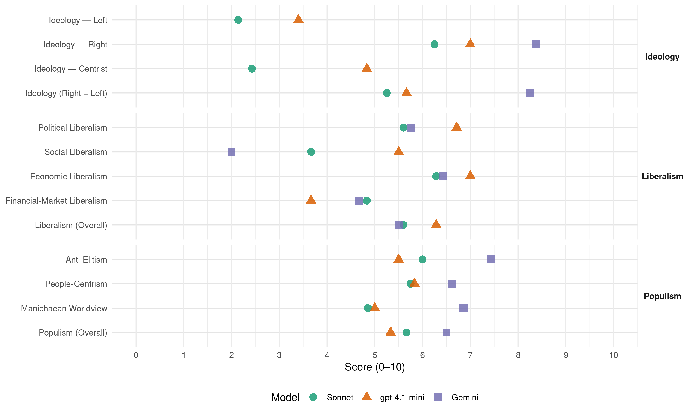

EL (Greece, 2019)
manifesto_id 34711_201907
Get full text: This site shows derived annotations and short verbatim quotes only. The full manifesto text is © Manifesto Project / WZB — obtain it via manifesto-project.wzb.eu using the manifesto_id above.
Headline scores
| Dimension | Sonnet | gpt-4.1-mini | Gemini |
|---|---|---|---|
| Populism (Overall) | 5.7 | 5.3 | 6.5 |
| Anti-Elitism | 6.0 | 5.5 | 7.4 |
| People-Centrism | 5.8 | 5.8 | 6.6 |
| Manichaean Worldview | 4.9 | 5.0 | 6.9 |
| Ideology (Right − Left) | 5.2 | 5.7 | 8.2 |
| Liberalism (Overall) | 5.6 | 6.3 | 5.5 |
| Political Liberalism | 5.6 | 6.7 | 5.8 |
| Social Liberalism | 3.7 | 5.5 | 2.0 |
| Economic Liberalism | 6.3 | 7.0 | 6.4 |
| Financial-Market Liberalism | 4.8 | 3.7 | 4.7 |
Evidence per dimension
Economic Liberalism
Gemini · score 5.0 · mixed · chunk 1
“κοινωφελείς, οι στρατηγικές και οι μονοπωλιακές κερδοφόρες επιχειρήσεις πρέπει να ανήκουν στο δημόσιο”
Η ΕΛΛΗΝΙΚΗ ΛΥΣΗ πιστεύει πως οι κοινωφελείς, οι στρατηγικές και οι μονοπωλιακές κερδοφόρες επιχειρήσεις πρέπει να ανήκουν στο δημόσιο, λειτουργώντας με ιδιωτικοοικονομικά κριτήρια
Gemini · score 6.0 · verified · chunk 2
“ελεύθερα διαπραγματεύσιμες τιμές”
προσφέρουν τα προϊόντα τους σε ενδιαφερόμενους αγοραστές με ελεύθερα διαπραγματεύσιμες τιμές, ενώ η διαπραγμάτευση
Gemini · score 4.0 · verified · chunk 3
“ρύθμιση της κερδοσκοπίας εκ μέρους των εμπόρων”
ώστε να ρυθμιστεί η κερδοσκοπία εκ μέρους των εμπόρων λιανικής και να βελτιωθεί η ικανότητα
Gemini · score 6.0 · verified · chunk 4
“ανάπτυξη βιώσιμων επιχειρήσεων και η ενίσχυση”
είναι η αειφόρος ανάπτυξη βιώσιμων επιχειρήσεων και η ενίσχυση τηςανταγωνιστικότητας των επιχειρησιακών
Gemini · score 8.0 · verified · chunk 5
“μείωση της γραφειοκρατίας και παροχή κινήτρων”
Φορολογικές διευκολύνσεις, μείωση της γραφειοκρατίας και παροχή κινήτρων για την ενθάρρυνση
Gemini · score 6.0 · verified · chunk 6
“αδειοδότηση μικρών και μεσαίων επιχειρήσεων”
απλοποιήσει όλους τους όρους δόμησης και την διαδικασία έκδοσης των οικοδομικών αδειών, καθώς και όλη την κείμενη νομοθεσία για την αδειοδότηση μικρών και μεσαίων επιχειρήσεων.
Gemini · score 7.0 · verified · chunk 7
“εξασφάλισης της ελεύθερης επιχειρηματικότητας για όλους”
κατανομή του εθνικού εισοδήματος μέσω της δίκαιης φορολογίας και εξασφάλισης της ελεύθερης επιχειρηματικότητας για όλους. β. Οι μισθοί κάθε είδους
Gemini · score 8.0 · verified · chunk 8
“εάν η Ελλάδα είχε ιδιωτικά Πανεπιστήμια”
Από την άλλη πλευρά, εάν η Ελλάδα είχε ιδιωτικά Πανεπιστήμια δεν θα εξοικονομούσε μόνο το συνάλλαγμα που φεύγει στο εξωτερικό, αλλά θα εισέπραττε επί πλέον από τους ξένους φοιτητές
gpt-4.1-mini · score 7.0 · verified · chunk 1
“υιοθέτηση ενός δίκαιου και ανταγωνιστικού με τις γύρω χώρες φορολογικού συστήματος”
ΒΑΣΙΚΕΣ ΕΝΕΡΓΕΙΕΣ Υιοθέτηση ενός δίκαιου και ανταγωνιστικού με τις γύρω χώρες φορολογικού συστήματος, παράλληλα με την ενίσχυση του ελεγκτικού μηχανισμού και τη δρομολόγηση ενός πλαισίου, φιλικού προς τις επιχειρήσεις.
gpt-4.1-mini · score 7.0 · verified · chunk 2
“Αύξηση της παραγωγικότητας της ελληνικής γεωργίας”
Για να ενισχυθεί η Ανταγωνιστικότητα της Ελληνικής Γεωργίας προτείνουμε τις ακόλουθες ΛΥΣΕΙΣ: Αύξηση της παραγωγικότητας της ελληνικής γεωργίας. Αύξηση της αποδοτικότητας της ελληνικής γεωργίας.
gpt-4.1-mini · score 7.0 · verified · chunk 3
“σωστή χρήση των ευρωπαϊκών προγραμμάτων για παραγωγή ιδιοπαραγόμενων ζωοτροφών”
Ενίσχυση και παροχή κινήτρων στους επαγγελματίες κτηνοτρόφους με τη σωστή χρήση των ευρωπαϊκών προγραμμάτων για παραγωγή ιδιοπαραγόμενων ζωοτροφών. Έτσι, οι κτηνοτρόφοι θα είναι αυτάρκεις και δεν θα εξαρτώνται από εισαγόμενες ζωοτροφές.
gpt-4.1-mini · score 7.0 · verified · chunk 5
“«Η φορολογία που έχει εφαρμοστεί από όλες τις ελληνικές κυβερνήσεις μέχρι και σήμερα δείχνει πως το κράτος δεν αντιμετωπίζει την επιχείρηση ως έναν από τους βασικότερους μοχλούς ανάπτυξης της οικονομίας!»”
…Η φορολογία που έχει εφαρμοστεί από όλες τις ελληνικές κυβερνήσεις μέχρι και σήμερα δείχνει πως το κράτος δεν αντιμετωπίζει την επιχείρηση ως έναν από τους βασικότερους μοχλούς ανάπτυξης της οικονομίας! Αντιθέτως, εδώ και δεκαετίες το Κράτος, με την πολιτική που ακολουθεί, δείχνει πως «μισεί» την ιδιωτική πρωτοβουλία…
gpt-4.1-mini · score 7.0 · verified · chunk 6
“Η ΕΛΛΗΝΙΚΗ ΛΥΣΗ θα πριμοδοτεί τις επιχειρήσεις που επενδύουν στην πράσινη ενέργεια με ειδικό φορολογικό και ασφαλιστικό καθεστώς”
…Η ΕΛΛΗΝΙΚΗ ΛΥΣΗ θα πριμοδοτεί τις επιχειρήσεις που επενδύουν στην πράσινη ενέργεια με ειδικό φορολογικό και ασφαλιστικό καθεστώς, προκειμένου να κινητοποιήσει και να προσελκύσει νέους επενδυτές με απλές διαδικασίες αδειοδοτήσεων…
gpt-4.1-mini · score 7.0 · verified · chunk 7
“ελεύθερη επιχειρηματικότητα για όλους”
Το κράτος θα μετατραπεί σε όργανο στα χέρια της κοινωνίας για την εξυπηρέτηση του κοινωνικού συμφέροντος… και εξασφάλισης της ελεύθερης επιχειρηματικότητας για όλους.
gpt-4.1-mini · score 7.0 · verified · chunk 8
“Η ιδιωτική εκπαίδευση στα Πανεπιστήμια είναι ένα βασικό θέμα για την Ελλάδα”
Η ιδιωτική εκπαίδευση στα Πανεπιστήμια είναι ένα βασικό θέμα για την Ελλάδα, η οποία πρέπει να παράγει πλούτο από όλους τους κλάδους της οικονομίας της για να αναπτυχθεί - σημειώνοντας πως στη Μ. Βρετανία σπούδαζαν το 2016/17 περί τους 10.000 Έλληνες.
Sonnet · score 6.0 · verified · chunk 1
“φορολογικοί συντελεστές θα πρέπει να είναι ανταγωνιστικοί”
Η ΕΛΛΗΝΙΚΗ ΛΥΣΗ πιστεύει πως οι φορολογικοί συντελεστές θα πρέπει να είναι ανταγωνιστικοί με τις γειτονικές χώρες για να προσελκύονται επιχειρήσεις
Sonnet · score 6.0 · verified · chunk 2
“ελεύθερα διαπραγματεύσιμες τιμές”
οι παραγωγοί προσφέρουν τα προϊόντα τους σε ενδιαφερόμενους αγοραστές με ελεύθερα διαπραγματεύσιμες τιμές
Sonnet · score 5.0 · mixed · chunk 3
“αύξηση των φορολογικών συντελεστών στο εισαγόμενο”
Μείωση των αυξημένων φορολογικών συντελεστών στο 5% για το εγχώριο κρέας και αύξηση των φορολογικών συντελεστών στο εισαγόμενο
Sonnet · score 6.0 · verified · chunk 4
“απλού, σταθερού και ελκυστικού φορολογικού συστήματος”
Εισαγωγή ενός απλού, σταθερού και ελκυστικού φορολογικού συστήματος, που θα παραμείνει αμετάβλητο στις βασικές του ρυθμίσεις για τουλάχιστον 10 χρόνια, ώστε να ενισχυθούν οι επενδύσεις στον τουρισμό.
Sonnet · score 7.0 · verified · chunk 5
“μείωση της γραφειοκρατίας και παροχή κινήτρων”
Φορολογικές διευκολύνσεις, μείωση της γραφειοκρατίας και παροχή κινήτρων για την ενθάρρυνση νέων επενδύσεων στον αγροτουρισμό
Sonnet · score 6.0 · verified · chunk 6
“κίνητρα χαμηλού κόστους παραγωγής και με φοροαπαλλαγές”
με ειδικά κίνητρα χαμηλού κόστους παραγωγής και με φοροαπαλλαγές για να παραμείνουν στην χώρα και να λειτουργούν δίνοντας θέσεις εργασίας
Sonnet · score 6.0 · verified · chunk 7
“εξασφάλισης της ελεύθερης επιχειρηματικότητας για όλους”
την κοινωνική δικαιοσύνη, την δίκαιη κατανομή του εθνικού εισοδήματος μέσω της δίκαιης φορολογίας και εξασφάλισης της ελεύθερης επιχειρηματικότητας για όλους.
Sonnet · score 7.0 · verified · chunk 8
“ανταγωνισμός με τα δημόσια Πανεπιστήμια”
θα υπήρχε ανταγωνισμός με τα δημόσια Πανεπιστήμια, ο οποίος θα λειτουργούσε θετικά ως προς την καλυτέρευση της ποιότητας
Financial-Market Liberalism
Gemini · score 2.0 · verified · chunk 1
“επίλυση του προβλήματος των κόκκινων δανείων πρώτης κατοικίας”
Επίλυση του προβλήματος των κόκκινων δανείων πρώτης κατοικίας (περί τα 12 δις €), μέσω ενός κρατικού οργανισμού
Gemini · score 5.0 · verified · chunk 2
“η τράπεζα δεν επενδύει στα χρηματιστήρια”
μικρομεσαίες επιχειρήσεις και τα νοικοκυριά. Φυσικά, η τράπεζα δεν επενδύει στα χρηματιστήρια, ούτε πουθενά αλλού
Gemini · score 6.0 · verified · chunk 3
“πρόγραμμα συμβολαιακής Γεωργίας & Κτηνοτροφίας των τραπεζών”
η ύπαρξη του πρόγραμμα συμβολαιακής Γεωργίας & Κτηνοτροφίας των τραπεζών, στηριζόμενη και ελεγχόμενη από το κράτος
Gemini · score 5.0 · verified · chunk 4
“συμβολαιακής Γεωργίας & Κτηνοτροφίας των τραπεζών”
η ύπαρξη του προγράμματος συμβολαιακής Γεωργίας & Κτηνοτροφίας των τραπεζών, στηριζόμενη
Gemini · score 4.0 · verified · chunk 5
“υποχρεωτική συμμετοχή των τραπεζών στη χρηματοδότηση”
να θεσπιστεί η υποχρεωτική συμμετοχή των τραπεζών στη χρηματοδότηση της ελληνικής ναυτιλίας
Gemini · score 6.0 · verified · chunk 6
“ΕΣΥ στο χρηματιστήριο”
παρακολουθεί την εύρυθμη λειτουργία του ΕΣΥ και θα εντάσσει το ΕΣΥ στο χρηματιστήριο.
gpt-4.1-mini · score 5.0 · verified · chunk 1
“δημιουργία μίας κρατικής εταιρείας διαχείρισης τους που θα τα εξαγοράσει από τις τράπεζες”
Ριζική επίλυση του προβλήματος των κόκκινων δανείων πρώτης κατοικίας (περί τα 12 δις €), με τη δημιουργία μίας κρατικής εταιρείας διαχείρισης τους που θα τα εξαγοράσει από τις τράπεζες στην τιμή που θα διαμορφωθεί μετά την αφαίρεση των προβλέψεων τους (κάτω από το 48% της αξίας τους).
gpt-4.1-mini · score 3.0 · verified · chunk 2
“Η ΕΛΛΗΝΙΚΗ ΛΥΣΗ πιστεύει πως πρέπει να δοθεί κύρος στο επάγγελμα του αγρότη”
Πρωταρχική μέριμνα της ΕΛΛΗΝΙΚΗΣ ΛΥΣΗΣ είναι η στήριξη, η ενίσχυση και η ανάπτυξη του παραμελημένου τομέα της Πρωτογενούς Παραγωγής. Η ΕΛΛΗΝΙΚΗ ΛΥΣΗ πιστεύει πως πρέπει να δοθεί κύρος στο επάγγελμα του αγρότη,
gpt-4.1-mini · score 5.0 · mixed · chunk 3
“Το Συμβολαιακό Πρόγραμμα καλύπτει όλη την παραγωγική, εφοδιαστική και μεταποιητική αλυσίδα”
Το Συμβολαιακό Πρόγραμμα καλύπτει όλη την παραγωγική, εφοδιαστική και μεταποιητική αλυσίδα του αγροτικού και κτηνοτροφικού προϊόντος υποστηρίζοντας συντεταγμένα την επωφελή συνεργασία παραγωγών και επιχειρήσεων εμπορίας, μεταποίησης και διάθεσης της αγροτικής παραγωγής.
gpt-4.1-mini · score 3.0 · verified · chunk 6
“Θα ελέγχει τη συνολική οικονομική δραστηριότητα του ΕΣΥ (σύμφωνα με το νομικό πλαίσιο της Ελλάδος και της ΕΕ)”
…Κεντρικό Ελεγκτικό Συμβούλιο. Θα συγκροτείται από Ανεξάρτητα Στελέχη και Τεχνοκράτες ειδικευμένους στον Κλάδο Υγείας, ύστερα από διαγωνισμό. Θα ελέγχει τη συνολική οικονομική δραστηριότητα του ΕΣΥ (σύμφωνα με το νομικό πλαίσιο της Ελλάδος και της ΕΕ) και θα παρεμβαίνει αποτρέποντας κάθε παρέκκλιση…
Sonnet · score 5.0 · mixed · chunk 1
“ίδρυση μίας κρατικής επενδυτικής τράπεζας”
παράλληλα με την ίδρυση μίας κρατικής επενδυτικής τράπεζας του τύπου της ΕΤΒΑ του παρελθόντος ή της γερμανικής ΚfW
Sonnet · score 4.0 · verified · chunk 2
“η τράπεζα δεν επενδύει στα χρηματιστήρια”
Φυσικά, η τράπεζα δεν επενδύει στα χρηματιστήρια, ούτε πουθενά αλλού - αφού ο σκοπός της είναι αποκλειστικά και μόνο η δανειοδότηση της πραγματικής οικονομίας
Sonnet · score 6.0 · verified · chunk 3
“πρόγραμμα συμβολαιακής Γεωργίας & Κτηνοτροφίας των τραπεζών”
η ύπαρξη του προγράμματος συμβολαιακής Γεωργίας & Κτηνοτροφίας των τραπεζών, στηριζόμενη και ελεγχόμενη από το κράτος
Sonnet · score 6.0 · verified · chunk 4
“Οι Τράπεζες λειτουργούν ως συντονιστές και χρηματοδότες”
Το Συμβολαιακό Πρόγραμμα καλύπτει όλη την παραγωγική, εφοδιαστική και μεταποιητική αλυσίδα… Οι Τράπεζες λειτουργούν ως συντονιστές και χρηματοδότες.
Sonnet · score 4.0 · mixed · chunk 5
“θα απαγορευθούν όλα τα παράγωγα προϊόντα”
Όσον αφορά το χρηματιστήριο, θα απαγορευθούν όλα τα παράγωγα προϊόντα, ενώ οι τράπεζες θα χωριστούν σε εμπορικές και επενδυτικές
Sonnet · score 5.0 · verified · chunk 6
“θα εντάσσει το ΕΣΥ στο χρηματιστήριο”
θα καθορίζει τη συνολική πολιτική του ΕΣΥ, θα καταρτίζει τον ετήσιο προϋπολογισμό, θα παρακολουθεί την εύρυθμη λειτουργία του ΕΣΥ και θα εντάσσει το ΕΣΥ στο χρηματιστήριο.
Sonnet · score 4.0 · verified · chunk 7
“προσέλκυση ξένων κεφαλαίων”
προγράμματα υποστήριξης της καινοτομίας, με προσέλκυση ξένων κεφαλαίων, τη συμμετοχή του κράτους, ξένων επενδυτών και των τραπεζών.
Sonnet · score 4.0 · verified · chunk 8
“Λήψη οικονομικών μέτρων περιορισμού μεταφοράς συναλλάγματος”
Αποσυμφόρηση των νησιών του Ανατολικού Αιγαίου από τους παράνομους μετανάστες. Λήψη οικονομικών μέτρων περιορισμού μεταφοράς συναλλάγματος και έλεγχος της προέλευσης των χρημάτων
Political Liberalism
Gemini · score 5.0 · mixed · chunk 1
“σταδιακή υιοθέτηση της άμεσης δημοκρατίας κατά το ελβετικό πρότυπο”
με στόχο τη σταδιακή υιοθέτηση της άμεσης δημοκρατίας κατά το ελβετικό πρότυπο που εφάρμοσε στη χώρα
Gemini · score 5.0 · verified · chunk 2
“ανάκτηση της εμπιστοσύνης των Πολιτών προς την Πολιτεία”
μέλημα είναι η ανάκτηση της εμπιστοσύνης των Πολιτών προς την Πολιτεία, προς το κράτος, η οποία
Gemini · score 5.0 · verified · chunk 6
“εκτελεστική αυθαιρεσία, όπου η εκάστοτε”
Κατέχουμε τα πρωτεία στην εκτελεστική αυθαιρεσία, όπου η εκάστοτε εκλεγμένη κυβέρνηση, να ερμηνεύει ή να περιφρονεί και να καταργεί κατά το δοκούν τους νόμους
Gemini · score 6.0 · verified · chunk 7
“διεξάγονται δημοψηφίσματα επί παντός θέματος”
αρμοδιότητες που είχε σύμφωνα με το Σύνταγμα του 1975. (7) ΔΗΜΟΨΗΦΙΣΜΑΤΑ Πέραν των άλλων, θα διεξάγονται δημοψηφίσματα επί παντός θέματος, όταν το ζητήσουν 100.000
Gemini · score 7.0 · verified · chunk 8
“Θα θεσμοθετηθεί Συνταγματικό Δικαστήριο”
στ. Θα υπάρξει απλοποίηση και κωδικοποίηση της πολυδαίδαλης νομοθεσίας, την οποία κανείς δεν γνωρίζει. ζ. Θα θεσμοθετηθεί Συνταγματικό Δικαστήριο. Κάθε διάταξη νόμου, που θα κηρύσσεται αντισυνταγματική
gpt-4.1-mini · score 7.0 · verified · chunk 1
“να κάνουν τους Έλληνες να νιώθουν ασφάλεια και ότι όλοι είναι ΙΣΟΙ απέναντι στο ΝΟΜΟ”
Η ΕΛΛΗΝΙΚΗ ΛΥΣΗ προτείνει τα συγκεκριμένα μέτρα που θα αναβαθμίσουν το θεσμό αυτό και θα κάνουν τους Έλληνες να νιώθουν ασφάλεια και ότι όλοι είναι ΙΣΟΙ απέναντι στο ΝΟΜΟ, δίχως ΚΑΜΙΑ Εξαίρεση!!
gpt-4.1-mini · score 6.0 · verified · chunk 2
“ανάκτηση της εμπιστοσύνης των Πολιτών προς την Πολιτεία”
Πρώτο μας μέλημα είναι η ανάκτηση της εμπιστοσύνης των Πολιτών προς την Πολιτεία, προς το κράτος, η οποία θα φέρει πίσω αποταμιεύσεις άνω των 100 δις €,
gpt-4.1-mini · score 7.0 · verified · chunk 3
“Ειδική Διαδικασία Πρόσβασης των νεοσύστατων Κτηνοτροφικών ΑΕ στο Λιανικό Εμπόριο”
Για την αντιμετώπιση αυτού του «νοσηρού» φαινομένου, δημιουργούμε άμεσα Ειδική Διαδικασία Πρόσβασης των νεοσύστατων Κτηνοτροφικών ΑΕ στο Λιανικό Εμπόριο. Αυτό επιτυγχάνεται με την Ίδρυση σε πρώτη Φάση στις πόλεις: Αθήνα, Θεσσαλονίκη, Πάτρα, Ηράκλειο, Λάρισα, Ιωάννινα, Αγρίνιο, Σέρρες και Αλεξανδρούπολη, Ειδικών Κέντρων Αγοράς Γαλακτοκομικών Προϊόντων, σε σημεία των πόλεων που θα είναι εύκολη η πρόσβαση των πολιτών.
gpt-4.1-mini · score 6.0 · verified · chunk 5
“«Το Κεντρικό ΔΣ θα καθορίζει τη συνολική πολιτική του ΕΣΥ, θα καταρτίζει τον ετήσιο προϋπολογισμό, θα παρακολουθεί την εύρυθμη λειτουργία του ΕΣΥ και θα εντάσσει το ΕΣΥ στο χρηματιστήριο.»”
…Το Κεντρικό ΔΣ θα καθορίζει τη συνολική πολιτική του ΕΣΥ, θα καταρτίζει τον ετήσιο προϋπολογισμό, θα παρακολουθεί την εύρυθμη λειτουργία του ΕΣΥ και θα εντάσσει το ΕΣΥ στο χρηματιστήριο. (β) Κεντρικό Ελεγκτικό Συμβούλιο. Θα συγκροτείται από Ανεξάρτητα Στελέχη και Τεχνοκράτες ειδικευμένους στον Κλάδο Υγείας…
gpt-4.1-mini · score 7.0 · verified · chunk 6
“Η ΕΛΛΗΝΙΚΗ ΛΥΣΗ επιδιώκει την εξυγίανση στο σύνολο της Δημόσιας Διοίκησης”
…Η ΕΛΛΗΝΙΚΗ ΛΥΣΗ επιδιώκει την εξυγίανση στο σύνολο της Δημόσιας Διοίκησης, ώστε αυτή να καταστεί πιο ευέλικτη, λειτουργική, αποδοτική και αποτελεσματική…
gpt-4.1-mini · score 7.0 · verified · chunk 7
“δημοκρατία, δικαιώματα, εκλογές, δικαστήρια, Βουλή”
Η εμπεριστατωμένη διδαχή της ελληνικής ιστορίας, της ελληνικής γλώσσας και των ατομικών και πολιτικών δικαιωμάτων θα είναι υποχρεωτική στη μέση και πρωτοβάθμια παιδεία για την δημιουργία άρτια καταρτισμένων Ελλήνων πολιτών.
gpt-4.1-mini · score 7.0 · verified · chunk 8
“Η εκπαίδευση προβάλλεται ως καταναλωτικό αγαθό που συναλλάσσεται ανταλλακτικά”
Η εκπαίδευση προβάλλεται ως καταναλωτικό αγαθό που συναλλάσσεται ανταλλακτικά, με συγκεκριμένο αντίτιμο για συγκεκριμένο χρόνο. Η ώρα ανά μαθητή έχει γίνει αντικείμενο αγοραπωλησίας, δηλαδή συναλλάσσεται ως εμπόρευμα και υπόκειται σε διαχείριση.
Sonnet · score 6.0 · verified · chunk 1
“υιοθέτηση της άμεσης δημοκρατίας κατά το ελβετικό πρότυπο”
Την ολική αναδιάρθρωση του Κοινοβουλευτικού Συστήματος, με στόχο τη σταδιακή υιοθέτηση της άμεσης δημοκρατίας κατά το ελβετικό πρότυπο που εφάρμοσε στη χώρα ο εξαίρετος Ι. Καποδίστριας.
Sonnet · score 5.0 · verified · chunk 2
“Ουσιαστική εκπροσώπηση του Ιδιωτικού τομέα στη διαδικασία λήψης αποφάσεων”
Ουσιαστική εκπροσώπηση του Ιδιωτικού τομέα στη διαδικασία λήψης αποφάσεων (νομοθετικών και ρυθμιστικών) που αφορούν στον Αγροτικό Τομέα
Sonnet · score 6.0 · verified · chunk 5
“Την αρμοδιότητα του ελέγχου θα την έχει μόνο το Κοινοβούλιο”
Την αρμοδιότητα του ελέγχου του γραφείου θα την έχει μόνο το Κοινοβούλιο, 2 φορές κάθε έτος
Sonnet · score 5.0 · verified · chunk 6
“αυστηρά κριτήρια, μετά από διαδικασία αυστηρού διαγωνισμού”
Διορισμός Δημοσίων Υπαλλήλων με αυστηρά κριτήρια, μετά από διαδικασία αυστηρού διαγωνισμού πρόσληψης και ελέγχου της ύπαρξης και εγκυρότητας όλων των απαραίτητων δικαιολογητικών
Sonnet · score 5.0 · mixed · chunk 7
“δυναμική δημοκρατία έναντι της στατικής”
Η «Ελληνική Λύση» προτείνει την εγκαθίδρυση δυναμικής δημοκρατίας έναντι της στατικής που ισχύει σήμερα.
Sonnet · score 6.0 · verified · chunk 8
“Θα θεσμοθετηθεί Συνταγματικό Δικαστήριο”
ζ. Θα θεσμοθετηθεί Συνταγματικό Δικαστήριο. Κάθε διάταξη νόμου, που θα κηρύσσεται αντισυνταγματική
Liberalism (Overall)
Gemini · score 4.0 · verified · chunk 1
“κοινωφελείς, οι στρατηγικές και οι μονοπωλιακές κερδοφόρες επιχειρήσεις πρέπει να ανήκουν στο δημόσιο”
Η ΕΛΛΗΝΙΚΗ ΛΥΣΗ πιστεύει πως οι κοινωφελείς, οι στρατηγικές και οι μονοπωλιακές κερδοφόρες επιχειρήσεις πρέπει να ανήκουν στο δημόσιο, λειτουργώντας με ιδιωτικοοικονομικά κριτήρια
Gemini · score 5.0 · verified · chunk 2
“ελεύθερα διαπραγματεύσιμες τιμές”
προσφέρουν τα προϊόντα τους σε ενδιαφερόμενους αγοραστές με ελεύθερα διαπραγματεύσιμες τιμές, ενώ η διαπραγμάτευση
Gemini · score 5.0 · verified · chunk 3
“πρόγραμμα συμβολαιακής Γεωργίας & Κτηνοτροφίας των τραπεζών”
η ύπαρξη του πρόγραμμα συμβολαιακής Γεωργίας & Κτηνοτροφίας των τραπεζών, στηριζόμενη και ελεγχόμενη από το κράτος
Gemini · score 6.0 · verified · chunk 4
“ανάπτυξη βιώσιμων επιχειρήσεων και η ενίσχυση”
είναι η αειφόρος ανάπτυξη βιώσιμων επιχειρήσεων και η ενίσχυση τηςανταγωνιστικότητας των επιχειρησιακών
Gemini · score 6.0 · verified · chunk 5
“μείωση της γραφειοκρατίας και παροχή κινήτρων”
Φορολογικές διευκολύνσεις, μείωση της γραφειοκρατίας και παροχή κινήτρων για την ενθάρρυνση
Gemini · score 5.0 · verified · chunk 6
“αδειοδότηση μικρών και μεσαίων επιχειρήσεων”
απλοποιήσει όλους τους όρους δόμησης και την διαδικασία έκδοσης των οικοδομικών αδειών, καθώς και όλη την κείμενη νομοθεσία για την αδειοδότηση μικρών και μεσαίων επιχειρήσεων.
Gemini · score 7.0 · verified · chunk 7
“εξασφάλισης της ελεύθερης επιχειρηματικότητας για όλους”
κατανομή του εθνικού εισοδήματος μέσω της δίκαιης φορολογίας και εξασφάλισης της ελεύθερης επιχειρηματικότητας για όλους. β. Οι μισθοί κάθε είδους
Gemini · score 6.0 · verified · chunk 8
“εάν η Ελλάδα είχε ιδιωτικά Πανεπιστήμια”
Από την άλλη πλευρά, εάν η Ελλάδα είχε ιδιωτικά Πανεπιστήμια δεν θα εξοικονομούσε μόνο το συνάλλαγμα που φεύγει στο εξωτερικό, αλλά θα εισέπραττε επί πλέον από τους ξένους φοιτητές
gpt-4.1-mini · score 6.0 · verified · chunk 1
“υιοθέτηση ενός δίκαιου και ανταγωνιστικού με τις γύρω χώρες φορολογικού συστήματος”
ΒΑΣΙΚΕΣ ΕΝΕΡΓΕΙΕΣ Υιοθέτηση ενός δίκαιου και ανταγωνιστικού με τις γύρω χώρες φορολογικού συστήματος, παράλληλα με την ενίσχυση του ελεγκτικού μηχανισμού και τη δρομολόγηση ενός πλαισίου, φιλικού προς τις επιχειρήσεις.
gpt-4.1-mini · score 5.0 · verified · chunk 2
“ανάκτηση της εμπιστοσύνης των Πολιτών προς την Πολιτεία”
Πρώτο μας μέλημα είναι η ανάκτηση της εμπιστοσύνης των Πολιτών προς την Πολιτεία, προς το κράτος, η οποία θα φέρει πίσω αποταμιεύσεις άνω των 100 δις €,
gpt-4.1-mini · score 6.0 · verified · chunk 3
“σωστή χρήση των ευρωπαϊκών προγραμμάτων για παραγωγή ιδιοπαραγόμενων ζωοτροφών”
Ενίσχυση και παροχή κινήτρων στους επαγγελματίες κτηνοτρόφους με τη σωστή χρήση των ευρωπαϊκών προγραμμάτων για παραγωγή ιδιοπαραγόμενων ζωοτροφών. Έτσι, οι κτηνοτρόφοι θα είναι αυτάρκεις και δεν θα εξαρτώνται από εισαγόμενες ζωοτροφές.
gpt-4.1-mini · score 7.0 · verified · chunk 5
“«Η φορολογία που έχει εφαρμοστεί από όλες τις ελληνικές κυβερνήσεις μέχρι και σήμερα δείχνει πως το κράτος δεν αντιμετωπίζει την επιχείρηση ως έναν από τους βασικότερους μοχλούς ανάπτυξης της οικονομίας!»”
…Η φορολογία που έχει εφαρμοστεί από όλες τις ελληνικές κυβερνήσεις μέχρι και σήμερα δείχνει πως το κράτος δεν αντιμετωπίζει την επιχείρηση ως έναν από τους βασικότερους μοχλούς ανάπτυξης της οικονομίας! Αντιθέτως, εδώ και δεκαετίες το Κράτος, με την πολιτική που ακολουθεί, δείχνει πως «μισεί» την ιδιωτική πρωτοβουλία…
gpt-4.1-mini · score 6.0 · verified · chunk 6
“Η ΕΛΛΗΝΙΚΗ ΛΥΣΗ επιδιώκει την εξυγίανση στο σύνολο της Δημόσιας Διοίκησης”
…Η ΕΛΛΗΝΙΚΗ ΛΥΣΗ επιδιώκει την εξυγίανση στο σύνολο της Δημόσιας Διοίκησης, ώστε αυτή να καταστεί πιο ευέλικτη, λειτουργική, αποδοτική και αποτελεσματική…
gpt-4.1-mini · score 7.0 · verified · chunk 7
“ελεύθερη επιχειρηματικότητα για όλους”
Το κράτος θα μετατραπεί σε όργανο στα χέρια της κοινωνίας για την εξυπηρέτηση του κοινωνικού συμφέροντος… και εξασφάλισης της ελεύθερης επιχειρηματικότητας για όλους.
gpt-4.1-mini · score 7.0 · verified · chunk 8
“Η ιδιωτική εκπαίδευση στα Πανεπιστήμια είναι ένα βασικό θέμα για την Ελλάδα”
Η ιδιωτική εκπαίδευση στα Πανεπιστήμια είναι ένα βασικό θέμα για την Ελλάδα, η οποία πρέπει να παράγει πλούτο από όλους τους κλάδους της οικονομίας της για να αναπτυχθεί - σημειώνοντας πως στη Μ. Βρετανία σπούδαζαν το 2016/17 περί τους 10.000 Έλληνες.
Sonnet · score 6.0 · verified · chunk 1
“φιλικό προς τις επιχειρήσεις, ξένες και ελληνικές”
Την Ανάπτυξη, με έμφαση στις επενδύσεις και στην επιχειρηματικότητα, μέσα σε ένα κράτος που δεν θα είναι γραφειοκρατικά δομημένο… φιλικό προς τις επιχειρήσεις, ξένες και ελληνικές.
Sonnet · score 5.0 · verified · chunk 2
“κίνητρα εισόδου στις νέες επιχειρήσεις”
Αλλαγή του ρυθμιστικού πλαισίου στη βιομηχανία τροφίμων. Με αυτόν τον τρόπο δημιουργούμε κίνητρα εισόδου στις νέες επιχειρήσεις
Sonnet · score 6.0 · mixed · chunk 3
“αύξηση των φορολογικών συντελεστών στο εισαγόμενο”
Μείωση των αυξημένων φορολογικών συντελεστών στο 5% για το εγχώριο κρέας και αύξηση των φορολογικών συντελεστών στο εισαγόμενο
Sonnet · score 6.0 · verified · chunk 4
“απλού, σταθερού και ελκυστικού φορολογικού συστήματος”
Εισαγωγή ενός απλού, σταθερού και ελκυστικού φορολογικού συστήματος, που θα παραμείνει αμετάβλητο στις βασικές του ρυθμίσεις για τουλάχιστον 10 χρόνια, ώστε να ενισχυθούν οι επενδύσεις στον τουρισμό.
Sonnet · score 6.0 · verified · chunk 5
“μείωση της γραφειοκρατίας και παροχή κινήτρων”
Φορολογικές διευκολύνσεις, μείωση της γραφειοκρατίας και παροχή κινήτρων για την ενθάρρυνση νέων επενδύσεων στον αγροτουρισμό
Sonnet · score 5.0 · verified · chunk 6
“κίνητρα χαμηλού κόστους παραγωγής και με φοροαπαλλαγές”
με ειδικά κίνητρα χαμηλού κόστους παραγωγής και με φοροαπαλλαγές για να παραμείνουν στην χώρα και να λειτουργούν δίνοντας θέσεις εργασίας
Sonnet · score 4.0 · mixed · chunk 7
“ελεύθερης επιχειρηματικότητας για όλους”
δίκαιη κατανομή του εθνικού εισοδήματος μέσω της δίκαιης φορολογίας και εξασφάλισης της ελεύθερης επιχειρηματικότητας για όλους.
Sonnet · score 5.0 · mixed · chunk 8
“Θα θεσμοθετηθεί Συνταγματικό Δικαστήριο”
ζ. Θα θεσμοθετηθεί Συνταγματικό Δικαστήριο. Κάθε διάταξη νόμου, που θα κηρύσσεται αντισυνταγματική
Anti-Elitism
Gemini · score 8.0 · verified · chunk 1
“απαλλαγμένοι από την οικογενειοκρατία, τα «τζάκια» και τη διαφθορά”
Στην ΕΛΛΗΝΙΚΗ ΛΥΣΗ είμαστε απαλλαγμένοι από την οικογενειοκρατία, τα «τζάκια» και τη διαφθορά. Ακριβώς για αυτό το λόγο
Gemini · score 8.0 · verified · chunk 2
“απαλλαγμένοι από κομματικά και μικροπολιτικά συμφέροντα”
ανακούφιση των πολιτών. ΕΙΜΑΣΤΕ απαλλαγμένοι από κομματικά και μικροπολιτικά συμφέροντα. ΚΑΛΟΥΜΕ όλες τις Ελληνίδες
Gemini · score 5.0 · verified · chunk 3
“δυστυχώς οι κυβερνώντες από τη Μεταπολίτευση”
βότανα αλλά και σε super foods είναι τόσο μεγάλη, που δυστυχώς οι κυβερνώντες από τη Μεταπολίτευση και μετά, είτε αγνοούν, είτε εσκεμμένα
Gemini · score 7.0 · verified · chunk 5
“ληστρική φοροεπιδρομή του Κράτους”
γλιτώσουν οι επιχειρηματίες από την ληστρική φοροεπιδρομή του Κράτους! Η Αναπτυξιακή
Gemini · score 8.0 · verified · chunk 6
“συμφέροντα της οικονομικής”ελίτ”“
εξυπηρετεί τόσο μικροκομματικά συμφέροντα και διάφορες επαγγελματικές συντεχνίες, όσο και μεγάλα οικονομικά συμφέροντα της οικονομικής “ελίτ” και ημετέρων της
Gemini · score 8.0 · verified · chunk 7
“αντιμετώπιση της διαφθοράς και της διαπλοκής”
κόστους Η αξιοκρατική επιλογή των υπαλλήλων που στελεχώνουν τις δημόσιες υπηρεσίες Η αντιμετώπιση της διαφθοράς και της διαπλοκής στη Δημόσια Διοίκηση Οι προτάσεις
Gemini · score 8.0 · verified · chunk 8
“Όλες οι κυβερνήσεις ενδιαφέρονται μόνο για την ευημερία”
Έλληνες Πολίτες μέσα στην Ελλάδα φιμώνονται και αντιμετωπίζονται ως μειονότητα! Όλες οι κυβερνήσεις ενδιαφέρονται μόνο για την ευημερία των παράνομων μεταναστών.
gpt-4.1-mini · score 8.0 · verified · chunk 1
“απαλλαγμένοι από την οικογενειοκρατία, τα «τζάκια» και τη διαφθορά”
Στην ΕΛΛΗΝΙΚΗ ΛΥΣΗ είμαστε απαλλαγμένοι από την οικογενειοκρατία, τα «τζάκια» και τη διαφθορά. Ακριβώς για αυτό το λόγο, είμαστε αποφασισμένοι να καταβάλουμε κάθε δυνατή προσπάθεια για να διορθώσουμε τα «κακώς κείμενα» της πολιτικής, της οικονομίας και του δημόσιου βίου, που τόσα χρόνια εμποδίζουν την ουσιαστική ανάπτυξη της Ελλάδας.
gpt-4.1-mini · score 7.0 · verified · chunk 2
“ΕΙΜΑΣΤΕ απαλλαγμένοι από κομματικά και μικροπολιτικά συμφέροντα”
ΕΙΜΑΣΤΕ απαλλαγμένοι από κομματικά και μικροπολιτικά συμφέροντα. ΚΑΛΟΥΜΕ όλες τις Ελληνίδες και όλους τους Έλληνες να ενωθούν μαζί μας για την ΑΝΑΣΤΑΣΗ της ΕΛΛΑΔΑΣ.
gpt-4.1-mini · score 2.0 · verified · chunk 3
“η ύπουλη πολιτική της Γερμανίας που διατηρεί τους μισθούς κάτω από την παραγωγικότητα”
Για να κατανοήσει κανείς πόσο μας επηρεάζει έμμεσα η ύπουλη πολιτική της Γερμανίας που διατηρεί τους μισθούς κάτω από την παραγωγικότητα των εργαζομένων της, οφείλει να γνωρίζει πως η πρώτη εξαγωγική αγορά μας στα ψάρια, η Ιταλία, επειδή υποφέρει η βιομηχανία της από το γερμανικό ανταγωνισμό, έχει χαμηλότερα εισοδήματα, οπότε εισάγει λιγότερα ψάρια από την Ελλάδα.
gpt-4.1-mini · score 3.0 · verified · chunk 6
“η εκάστοτε εκλεγμένη κυβέρνηση, να ερμηνεύει ή να περιφρονεί και να καταργεί κατά το δοκούν τους νόμους”
…κατέχουμε τα πρωτεία στην εκτελεστική αυθαιρεσία, όπου η εκάστοτε εκλεγμένη κυβέρνηση, να ερμηνεύει ή να περιφρονεί και να καταργεί κατά το δοκούν τους νόμους που έχουν εκδοθεί από προηγούμενες κυβερνήσεις, με σκοπό να εξυπηρετεί τόσο μικροκομματικά συμφέροντα και διάφορες επαγγελματικές συντεχνίες…
gpt-4.1-mini · score 6.0 · verified · chunk 7
“το κράτος θα πάψει να είναι δυνάστης της κοινωνίας και μέσο εξυπηρέτησης της κομματικής πελατείας”
(5) ΚΟΙΝΩΝΙΚΟΠΟΙΗΣΗ ΤΟΥ ΚΡΑΤΟΥΣ α. Το κράτος θα πάψει να είναι δυνάστης της κοινωνίας και μέσο εξυπηρέτησης της κομματικής πελατείας και θα μετατραπεί σε όργανο στα χέρια της κοινωνίας για την εξυπηρέτηση του κοινωνικού συμφέροντος, δηλαδή θα διασφαλίζει την ελευθερία, την κοινωνική ασφάλεια, την κοινωνική ειρήνη, την οικονομική ανάπτυξη, την κοινωνική δικαιοσύνη, την δίκαιη κατανομή του εθνικού εισοδήματος μέσω της δίκαιης φορολογίας και εξασφάλισης της ελεύθερης επιχειρηματικότητας για όλους.
gpt-4.1-mini · score 7.0 · verified · chunk 8
“Η Ελλάδα δεν έχει ανάγκη από επαγγελματίες βουλευτές, αλλά από πατριώτες”
Η ΕΛΛΗΝΙΚΗ ΛΥΣΗ πιστεύει πως οι Βουλευτές έχουν ύψιστη ευθύνη απέναντι στην πατρίδα και τους Πολίτες! Ο κάθε βουλευτής ασκεί λειτούργημα και όχι επάγγελμα! Η Ελλάδα δεν έχει ανάγκη από επαγγελματίες βουλευτές, αλλά από πατριώτες, που θα βάζουν το εθνικό συμφέρον πάνω από το ατομικό!
Sonnet · score 7.0 · verified · chunk 1
“απαλλαγμένοι από την οικογενειοκρατία, τα «τζάκια» και τη διαφθορά”
Στην ΕΛΛΗΝΙΚΗ ΛΥΣΗ είμαστε απαλλαγμένοι από την οικογενειοκρατία, τα «τζάκια» και τη διαφθορά. Ακριβώς για αυτό το λόγο, είμαστε αποφασισμένοι να καταβάλουμε κάθε δυνατή προσπάθεια
Sonnet · score 5.0 · verified · chunk 2
“εγκληματική αδιαφορία για τον Πρωτογενή Τομέα”
όλες οι Ελληνικές Κυβερνήσεις, από την μεταπολίτευση και μετά, επέδειξαν εγκληματική αδιαφορία για τον Πρωτογενή Τομέα της Ελλάδας
Sonnet · score 4.0 · mixed · chunk 3
“κυβερνώντες από τη Μεταπολίτευση και μετά”
δυστυχώς οι κυβερνώντες από τη Μεταπολίτευση και μετά, είτε αγνοούν, είτε εσκεμμένα δεν έχουν προωθήσει δράσεις
Sonnet · score 1.0 · mixed · chunk 4
“Η ΕΛΛΗΝΙΚΗ ΛΥΣΗ ΕΙΝΑΙ ΤΟ ΜΟΝΑΔΙΚΟ ΚΟΜΜΑ”
ΜΕ ΓΝΩΜΟΝΑ ΤΟ ΕΘΝΙΚΟ ΣΥΜΦΕΡΟΝ ΚΑΙ ΤΗΝ ΕΠΑΝΕΚΚΙΝΗΣΗ ΤΗΣ ΟΙΚΟΝΟΜΙΑΣ ΕΠΙΔΙΩΚΟΥΜΕ ΝΑ ΚΑΤΑΣΤΕΙ ΞΑΝΑ Η ΕΛΛΑΔΑ ΑΥΤΑΡΚΗΣ ΚΑΙ ΙΣΧΥΡΗ!
Sonnet · score 5.0 · verified · chunk 5
“αερολογίες, μη ρεαλιστικές λύσεις και προεκλογικές υποσχέσεις”
πρόκειται απλά για αερολογίες, μη ρεαλιστικές λύσεις και προεκλογικές υποσχέσεις που είναι αδύνατον να εφαρμοστούν
Sonnet · score 5.0 · verified · chunk 6
“μεγάλα οικονομικά συμφέροντα της οικονομικής”ελίτ”“
να εξυπηρετεί τόσο μικροκομματικά συμφέροντα και διάφορες επαγγελματικές συντεχνίες, όσο και μεγάλα οικονομικά συμφέροντα της οικονομικής “ελίτ” και ημετέρων της, με προφανή βλάβη για το κοινωνικό και εθνικό συμφέρον
Sonnet · score 7.0 · verified · chunk 7
“πελατειακών σχέσεων”
υποψηφίων και αντικειμενικών κριτηρίων, αλλά βάσει πελατειακών σχέσεων. Η συμπεριφορά των Δημόσιων Υπηρεσιών
Sonnet · score 7.0 · verified · chunk 8
“Μνημονιακές Κυβερνήσεις”
εντός μιας δριμύτατης οικονομικής κρίσης που έφεραν οι Μνημονιακές Κυβερνήσεις, να αντιμετωπίσει την αποδιάρθρωση
Ideology — Centrist
gpt-4.1-mini · score 6.0 · verified · chunk 1
“Στην ΕΛΛΗΝΙΚΗ ΛΥΣΗ διαθέτουμε και τα δύο, καλώντας όλες τις Ελληνίδες και τους Έλληνες να μας ακολουθήσουν”
Το μόνο που χρειάζεται είναι ένας στρατηγικός σχεδιασμός που θα στοχεύει στο εθνικό συμφέρον και ισχυρή πολιτική βούληση. Στην ΕΛΛΗΝΙΚΗ ΛΥΣΗ διαθέτουμε και τα δύο, καλώντας όλες τις Ελληνίδες και τους Έλληνες να μας ακολουθήσουν!
gpt-4.1-mini · score 5.0 · verified · chunk 2
“στρατηγικός σχεδιασμός που θα στοχεύει στο εθνικό συμφέρον και ισχυρή πολιτική βούληση”
Το μόνο που χρειάζεται είναι ένας στρατηγικός σχεδιασμός που θα στοχεύει στο εθνικό συμφέρον και ισχυρή πολιτική βούληση. Στην ΕΛΛΗΝΙΚΗ ΛΥΣΗ διαθέτουμε και τα δύο, καλώντας όλες τις Ελληνίδες και τους Έλληνες να μας ακολουθήσουν!
gpt-4.1-mini · score 3.0 · verified · chunk 3
“η στήριξη των αγροτών είναι υποχρέωση, γιατί έτσι στηρίζονται η εθνική οικονομία και η ελληνική περιφέρεια”
Για την ΕΛΛΗΝΙΚΗ ΛΥΣΗ, η στήριξη των αγροτών είναι υποχρέωση, γιατί έτσι στηρίζονται η εθνική οικονομία και η ελληνική περιφέρεια, εφόσον οι αγρότες αποτελούν βασικούς συντελεστές βιωσιμότητας της υπαίθρου.
gpt-4.1-mini · score 4.0 · verified · chunk 6
“Η ΕΛΛΗΝΙΚΗ ΛΥΣΗ επιδιώκει την εξυγίανση στο σύνολο της Δημόσιας Διοίκησης”
…Η ΕΛΛΗΝΙΚΗ ΛΥΣΗ επιδιώκει την εξυγίανση στο σύνολο της Δημόσιας Διοίκησης, ώστε αυτή να καταστεί πιο ευέλικτη, λειτουργική, αποδοτική και αποτελεσματική…
gpt-4.1-mini · score 6.0 · verified · chunk 7
“η «Ελληνική Λύση» προτείνει την εγκαθίδρυση δυναμικής δημοκρατίας”
Η «Ελληνική Λύση» προτείνει την εγκαθίδρυση δυναμικής δημοκρατίας έναντι της στατικής που ισχύει σήμερα. Είναι η δυνατότητα που εξασφαλίζει την πρόοδο απέναντι στη συντήρηση.
gpt-4.1-mini · score 5.0 · verified · chunk 8
“Η ΕΛΛΗΝΙΚΗ ΛΥΣΗ πιστεύει πως οι Βουλευτές έχουν ύψιστη ευθύνη απέναντι στην πατρίδα”
Η ΕΛΛΗΝΙΚΗ ΛΥΣΗ πιστεύει πως οι Βουλευτές έχουν ύψιστη ευθύνη απέναντι στην πατρίδα και τους Πολίτες! Ο κάθε βουλευτής ασκεί λειτούργημα και όχι επάγγελμα! Η Ελλάδα δεν έχει ανάγκη από επαγγελματίες βουλευτές, αλλά από πατριώτες, που θα βάζουν το εθνικό συμφέρον πάνω από το ατομικό!
Sonnet · score 2.0 · verified · chunk 1
“ΠΥΞΙΔΑ ΜΑΣ ΤΟ ΕΘΝΙΚΟ ΣΥΜΦΕΡΟΝ”
ΕΙΜΑΣΤΕ ΔΙΑΦΟΡΕΤΙΚΟΙ ΑΠΟ ΤΟΥΣ ΑΛΛΟΥΣ ΚΑΙ ΤΟ ΑΠΟΔΕΙΚΝΥΟΥΜΕ ΕΜΠΡΑΚΤΩΣ ΜΕ ΤΟ ΠΡΟΓΡΑΜΜΑ ΔΙΑΚΥΒΕΡΝΗΣΗΣ ΜΑΣ ΠΥΞΙΔΑ ΜΑΣ ΤΟ ΕΘΝΙΚΟ ΣΥΜΦΕΡΟΝ
Sonnet · score 3.0 · verified · chunk 2
“ΕΙΜΑΣΤΕ απαλλαγμένοι από κομματικά και μικροπολιτικά συμφέροντα”
ΕΙΜΑΣΤΕ απαλλαγμένοι από κομματικά και μικροπολιτικά συμφέροντα
Sonnet · score 2.0 · verified · chunk 3
“η στήριξη των αγροτών είναι υποχρέωση”
Για την ΕΛΛΗΝΙΚΗ ΛΥΣΗ, η στήριξη των αγροτών είναι υποχρέωση, γιατί έτσι στηρίζονται η εθνική οικονομία
Sonnet · score 2.0 · mixed · chunk 4
“ΚΑΛΕΙ ΟΛΕΣ ΤΙΣ ΕΛΛΗΝΙΔΕΣ ΚΑΙ ΤΟΥΣ ΕΛΛΗΝΕΣ ΝΑ ΜΑΣ ΑΚΟΛΟΥΘΗΣΟΥΝ”
Η ΕΛΛΗΝΙΚΗ ΛΥΣΗ ΚΑΛΕΙ ΟΛΕΣ ΤΙΣ ΕΛΛΗΝΙΔΕΣ ΚΑΙ ΤΟΥΣ ΕΛΛΗΝΕΣ ΝΑ ΜΑΣ ΑΚΟΛΟΥΘΗΣΟΥΝ, ΝΑ ΣΤΗΡΙΞΟΥΝ ΤΟ ΟΡΑΜΑ ΜΑΣ
Sonnet · score 3.0 · verified · chunk 5
“Εθνικό Συμφέρον και την ευημερία των Ελλήνων”
έρευνας που έχει στο επίκεντρο το Εθνικό Συμφέρον και την ευημερία των Ελλήνων
Sonnet · score 2.0 · verified · chunk 6
“άμεσες και ρεαλιστικές προτάσεις - λύσεις”
η ΕΛΛΗΝΙΚΗ ΛΥΣΗ είναι εδώ για να προτείνει άμεσες και ρεαλιστικές προτάσεις - λύσεις για την αναδιοργάνωση και την αποτελεσματική λειτουργία του ΕΣΥ
Sonnet · score 3.0 · verified · chunk 7
“Εθνικό συμφέρον”
Πυρήνας της εξωτερικής πολιτικής για την ΕΛΛΗΝΙΚΗ ΛΥΣΗ είναι το Εθνικό συμφέρον.
Sonnet · score 2.0 · verified · chunk 8
“ΠΥΞΙΔΑ ΜΑΣ ΤΟ ΕΘΝΙΚΟ ΣΥΜΦΕΡΟΝ”
ΕΙΜΑΣΤΕ ΔΙΑΦΟΡΕΤΙΚΟΙ ΑΠΟ ΤΟΥΣ ΑΛΛΟΥΣ ΚΑΙ ΤΟ ΑΠΟΔΕΙΚΝΥΟΥΜΕ ΕΜΠΡΑΚΤΩΣ ΜΕ ΤΟ ΠΡΟΓΡΑΜΜΑ ΔΙΑΚΥΒΕΡΝΗΣΗΣ ΜΑΣ ΠΥΞΙΔΑ ΜΑΣ ΤΟ ΕΘΝΙΚΟ ΣΥΜΦΕΡΟΝ
Ideology — Left
gpt-4.1-mini · score 5.0 · mixed · chunk 1
“καταστροφικές πολιτικές των τελευταίων δεκαετιών την οδήγησαν στον βάλτο”
ΟΛΟΙ ΜΑΖΙ ΜΠΟΡΟΥΜΕ ΝΑ ΒΓΑΛΟΥΜΕ ΤΗΝ ΕΛΛΑΔΑ ΑΠΟ ΤΟΝ ΒΑΛΤΟ ΠΟΥ ΤΗΝ ΕΡΙΞΑΝ ΟΙ ΚΑΤΑΣΤΡΟΦΙΚΕΣ ΠΟΛΙΤΙΚΕΣ ΤΩΝ ΤΕΛΕΥΤΑΙΩΝ ΔΕΚΑΕΤΙΩΝ Η ΕΛΛΗΝΙΚΗ ΛΥΣΗ ΕΧΕΙ ΤΗ ΛΥΣΗ ΓΙΑ ΝΑ ΒΓΑΛΕΙ ΤΗΝ ΕΛΛΑΔΑ ΑΠΟ ΤΟ ΤΕΛΜΑ ΤΩΝ ΜΝΗΜΟΝΙΩΝ ΤΗΣ ΥΠΑΝΑΠΤΥΞΗΣ ΚΑΙ ΤΗΣ ΟΠΙΣΘΟΔΡΟΜΗΣΗΣ.
gpt-4.1-mini · score 3.0 · verified · chunk 2
“απαλλαγμένοι από κομματικά και μικροπολιτικά συμφέροντα”
ΕΙΜΑΣΤΕ απαλλαγμένοι από κομματικά και μικροπολιτικά συμφέροντα. ΚΑΛΟΥΜΕ όλες τις Ελληνίδες και όλους τους Έλληνες να ενωθούν μαζί μας για την ΑΝΑΣΤΑΣΗ της ΕΛΛΑΔΑΣ.
gpt-4.1-mini · score 3.0 · verified · chunk 3
“φορολογικές ελαφρύνσεις σε όσους γεωργούς απασχολούν Έλληνες”
Φορολογικές ελαφρύνσεις σε όσους γεωργούς απασχολούν Έλληνες, ως εργατικό προσωπικό στις καλλιέργειές τους.
gpt-4.1-mini · score 3.0 · verified · chunk 6
“Η ΕΛΛΗΝΙΚΗ ΛΥΣΗ πιστεύει πως η συνταγή της επίλυσης τους είναι μία και μοναδική: η παραγωγή πλούτου στην πατρίδα μας”
…Η ΕΛΛΗΝΙΚΗ ΛΥΣΗ, γνωρίζοντας όλα αυτά τα προβλήματα, πιστεύει πως η συνταγή της επίλυσης τους είναι μία και μοναδική: η παραγωγή πλούτου στην πατρίδα μας, η οποία θα προκαλέσει την επιστροφή των νέων, θα αυξήσει τις γεννήσεις…
gpt-4.1-mini · score 5.0 · verified · chunk 7
“δίκαιη κατανομή του εθνικού εισοδήματος μέσω της δίκαιης φορολογίας”
(5) ΚΟΙΝΩΝΙΚΟΠΟΙΗΣΗ ΤΟΥ ΚΡΑΤΟΥΣ α. Το κράτος θα πάψει να είναι δυνάστης της κοινωνίας και μέσο εξυπηρέτησης της κομματικής πελατείας και θα μετατραπεί σε όργανο στα χέρια της κοινωνίας για την εξυπηρέτηση του κοινωνικού συμφέροντος, δηλαδή θα διασφαλίζει την ελευθερία, την κοινωνική ασφάλεια, την κοινωνική ειρήνη, την οικονομική ανάπτυξη, την κοινωνική δικαιοσύνη, την δίκαιη κατανομή του εθνικού εισοδήματος μέσω της δίκαιης φορολογίας και εξασφάλισης της ελεύθερης επιχειρηματικότητας για όλους.
gpt-4.1-mini · score 3.0 · verified · chunk 8
“Η παράνομη μετανάστευση ανέκαθεν αποτελούσε ένα «αγκάθι» για κάθε Ελληνική Κυβέρνηση.”
Το μεταναστευτικό ζήτημα είναι ένα από τα πολλά μελανά σημεία της Κυβέρνησης ΣΥΡΙΖΑ - ΑΝΕΛ, το οποίο είναι ικανό να δυναμιτίσει τα θεμέλια όχι μόνο της Ελληνικής Κοινωνίας, αλλά ολόκληρου του Ελληνικού Κράτους και του Ελληνισμού ως σύνολο! Η παράνομη μετανάστευση ανέκαθεν αποτελούσε ένα «αγκάθι» για κάθε Ελληνική Κυβέρνηση.
Sonnet · score 3.0 · verified · chunk 1
“Αύξηση κατά 100 € και στη συνέχεια ετήσια αναπροσαρμογή”
Κατώτατος μισθός: Αύξηση κατά 100 € και στη συνέχεια ετήσια αναπροσαρμογή, ελαφρά χαμηλότερη από την παραγωγικότητα των εργαζομένων
Sonnet · score 2.0 · verified · chunk 2
“ενίσχυση του τζίρου και της ρευστότητας των μικρομεσαίων”
ο σκοπός της είναι αποκλειστικά και μόνο η δανειοδότηση της πραγματικής οικονομίας, προφανώς δε η ενίσχυση του τζίρου και της ρευστότητας των μικρομεσαίων επιχειρήσεων
Sonnet · score 2.0 · verified · chunk 3
“σπάζοντας έτσι τα καρτέλ των πολυκαταστημάτων”
να διαθέτουν τα εμπορεύματά τους ΑΠΕΥΘΕΙΑΣ στους πολίτες «σπάζοντας» έτσι τα καρτέλ των πολυκαταστημάτων και τα μονοπώλια
Sonnet · score 1.0 · mixed · chunk 4
“κρατική ενίσχυση για την κατασκευή νέων”
Μέριμνα και κρατική ενίσχυση για την κατασκευή νέων σύγχρονων παραγωγικών μονάδων μεταποίησης αλιευτικών προϊόντων.
Sonnet · score 2.0 · verified · chunk 5
“Δίκαιη Κατανομή του ΑΕΠ”
υγιούς ανταγωνισμού με σεβασμό στα εργασιακά δικαιώματα, την Αύξηση και την Δίκαιη Κατανομή του ΑΕΠ
Sonnet · score 2.0 · verified · chunk 6
“Δωρεάν περίθαλψη και νοσηλεία για όλους”
Δωρεάν περίθαλψη και νοσηλεία για όλους τους Έλληνες Πολίτες, ανεξαρτήτως εάν ανήκουν σε κάποιο ασφαλιστικό ταμείο ή όχι.
Sonnet · score 3.0 · verified · chunk 7
“δίκαιη κατανομή του εθνικού εισοδήματος”
την κοινωνική δικαιοσύνη, την δίκαιη κατανομή του εθνικού εισοδήματος μέσω της δίκαιης φορολογίας
Sonnet · score 1.0 · verified · chunk 8
“ανταγωνισμός με τα δημόσια Πανεπιστήμια”
θα υπήρχε ανταγωνισμός με τα δημόσια Πανεπιστήμια, ο οποίος θα λειτουργούσε θετικά ως προς την καλυτέρευση
Ideology (Right − Left)
Gemini · score 9.0 · verified · chunk 1
“αντιμετώπιση της παράνομης μετανάστευσης και την επαναπροώθηση”
Τη λήψη μέτρων για την αντιμετώπιση της παράνομης μετανάστευσης και την επαναπροώθηση των παρανόμων μεταναστών στις χώρες
Gemini · score 8.0 · verified · chunk 2
“στόχο που θα στοχεύει στο εθνικό συμφέρον”
χρειάζεται είναι ένας στρατηγικός σχεδιασμός που θα στοχεύει στο εθνικό συμφέρον και ισχυρή πολιτική βούληση.
Gemini · score 8.0 · verified · chunk 3
“Φορολογικές ελαφρύνσεις σε όσους κτηνοτρόφους απασχολούν Έλληνες”
προτιμούν τα εγχώρια προϊόντα. Φορολογικές ελαφρύνσεις σε όσους κτηνοτρόφους απασχολούν Έλληνες στις κτηνοτροφικές τους μονάδες. Επαναφορά
Gemini · score 6.0 · verified · chunk 4
“απασχολούν στις μονάδες τους Έλληνες”
Φοροελαφρύνσεις σε όσους επιχειρηματίες απασχολούν στις μονάδες τους Έλληνες, ως εργαζόμενους.
Gemini · score 8.0 · verified · chunk 5
“πρόσημο προς την ομόθρησκη Ρωσία”
δυνατούς τομείς ανάπτυξης του τουρισμού με πρόσημο προς την ομόθρησκη Ρωσία, όπου οι πολίτες
Gemini · score 9.0 · verified · chunk 6
“Προτεραιότητα των Ελλήνων Πολιτών”
5. Προτεραιότητα των Ελλήνων Πολιτών στις ΜΕΘ και στις νοσοκομείακές κλίνες.
Gemini · score 9.0 · verified · chunk 7
“αποτροπή εισόδου και το χειρισμό παράνομων μεταναστών”
συνοροφυλακής σε ειδική διεύθυνση της ΕΛ.ΑΣ., με μοναδικό σκοπό την αποτροπή εισόδου και το χειρισμό παράνομων μεταναστών, με ειδική εκπαίδευση και εξοπλισμό
Gemini · score 9.0 · verified · chunk 8
“να διαφυλάξουμε τη γλώσσα, τον πολιτισμό και τη θρησκεία μας”
Οι προτάσεις της ΕΛΛΗΝΙΚΗΣ ΛΥΣΗΣ έχουν στο επίκεντρο το εθνικό συμφέρον και την ασφάλεια της Ελλάδας και των Ελλήνων! Οι Έλληνες πρέπει να πάρουμε πίσω την πατρίδα μας και να διαφυλάξουμε τη γλώσσα, τον πολιτισμό και τη θρησκεία μας!
gpt-4.1-mini · score 7.0 · verified · chunk 1
“απαλλαγμένοι από την οικογενειοκρατία, τα «τζάκια» και τη διαφθορά”
Στην ΕΛΛΗΝΙΚΗ ΛΥΣΗ είμαστε απαλλαγμένοι από την οικογενειοκρατία, τα «τζάκια» και τη διαφθορά. Ακριβώς για αυτό το λόγο, είμαστε αποφασισμένοι να καταβάλουμε κάθε δυνατή προσπάθεια για να διορθώσουμε τα «κακώς κείμενα» της πολιτικής, της οικονομίας και του δημόσιου βίου, που τόσα χρόνια εμποδίζουν την ουσιαστική ανάπτυξη της Ελλάδας.
gpt-4.1-mini · score 7.0 · verified · chunk 2
“στρατηγικός σχεδιασμός που θα στοχεύει στο εθνικό συμφέρον”
Το μόνο που χρειάζεται είναι ένας στρατηγικός σχεδιασμός που θα στοχεύει στο εθνικό συμφέρον και ισχυρή πολιτική βούληση. Στην ΕΛΛΗΝΙΚΗ ΛΥΣΗ διαθέτουμε και τα δύο, καλώντας όλες τις Ελληνίδες και τους Έλληνες να μας ακολουθήσουν!
gpt-4.1-mini · score 3.0 · verified · chunk 3
“η στήριξη των αγροτών είναι υποχρέωση, γιατί έτσι στηρίζονται η εθνική οικονομία και η ελληνική περιφέρεια”
Για την ΕΛΛΗΝΙΚΗ ΛΥΣΗ, η στήριξη των αγροτών είναι υποχρέωση, γιατί έτσι στηρίζονται η εθνική οικονομία και η ελληνική περιφέρεια, εφόσον οι αγρότες αποτελούν βασικούς συντελεστές βιωσιμότητας της υπαίθρου.
gpt-4.1-mini · score 4.0 · verified · chunk 6
“Η ΕΛΛΗΝΙΚΗ ΛΥΣΗ πιστεύει πως κανένας Έλληνας δεν πρέπει να στερείται το αγαθό της Υγείας”
…Η ΕΛΛΗΝΙΚΗ ΛΥΣΗ πιστεύει πως κανένας Έλληνας δεν πρέπει να στερείται το αγαθό της Υγείας! ΠΡΟΓΡΑΜΜΑΤΙΚΕΣ ΘΕΣΕΙΣ ΤΗΣ «ΕΛΛΗΝΙΚΗΣ ΛΥΣΗΣ» ΓΙΑ ΤΟ ΔΗΜΟΓΡΑΦΙΚΟ ΚΑΙ ΤΟ ΑΣΦΑΛΙΣΤΙΚΟ…
gpt-4.1-mini · score 6.0 · verified · chunk 7
“η «Ελληνική Λύση» προτείνει την εγκαθίδρυση δυναμικής δημοκρατίας”
Η «Ελληνική Λύση» προτείνει την εγκαθίδρυση δυναμικής δημοκρατίας έναντι της στατικής που ισχύει σήμερα. Είναι η δυνατότητα που εξασφαλίζει την πρόοδο απέναντι στη συντήρηση.
gpt-4.1-mini · score 7.0 · verified · chunk 8
“Η Ελλάδα δεν έχει ανάγκη από επαγγελματίες βουλευτές, αλλά από πατριώτες”
Η ΕΛΛΗΝΙΚΗ ΛΥΣΗ πιστεύει πως οι Βουλευτές έχουν ύψιστη ευθύνη απέναντι στην πατρίδα και τους Πολίτες! Ο κάθε βουλευτής ασκεί λειτούργημα και όχι επάγγελμα! Η Ελλάδα δεν έχει ανάγκη από επαγγελματίες βουλευτές, αλλά από πατριώτες, που θα βάζουν το εθνικό συμφέρον πάνω από το ατομικό!
Sonnet · score 6.0 · verified · chunk 1
“να πάρουμε πίσω την πατρίδα μας”
Οι Έλληνες πρέπει να πάρουμε πίσω την πατρίδα μας και να διαφυλάξουμε τη γλώσσα, τον πολιτισμό και τη θρησκεία μας!
Sonnet · score 5.0 · verified · chunk 2
“στρατηγικός σχεδιασμός που θα στοχεύει στο εθνικό συμφέρον”
Το μόνο που χρειάζεται είναι ένας στρατηγικός σχεδιασμός που θα στοχεύει στο εθνικό συμφέρον και ισχυρή πολιτική βούληση
Sonnet · score 4.0 · verified · chunk 3
“Φορολογικές ελαφρύνσεις σε όσους κτηνοτρόφους απασχολούν Έλληνες”
Φορολογικές ελαφρύνσεις σε όσους κτηνοτρόφους απασχολούν Έλληνες στις κτηνοτροφικές τους μονάδες.
Sonnet · score 3.0 · verified · chunk 4
“Φοροελαφρύνσεις σε όσους επιχειρηματίες απασχολούν στις μονάδες τους Έλληνες”
Φοροελαφρύνσεις σε όσους επιχειρηματίες απασχολούν στις μονάδες τους Έλληνες, ως εργαζόμενους.
Sonnet · score 4.0 · verified · chunk 5
“ομόθρησκη Ρωσία”
έχει προτάσεις σ’ όλους τους δυνατούς τομείς ανάπτυξης του τουρισμού με πρόσημο προς την ομόθρησκη Ρωσία
Sonnet · score 6.0 · verified · chunk 6
“Προτεραιότητα των Ελλήνων Πολιτών στις ΜΕΘ”
Προτεραιότητα των Ελλήνων Πολιτών στις ΜΕΘ και στις νοσοκομειακές κλίνες.
Sonnet · score 7.0 · verified · chunk 7
“κατάργηση κυρίαρχων εθνικών κρατών”
η παγκοσμιοποίηση, η οποία επί της ουσίας στοχεύει την κατάργηση κυρίαρχων εθνικών κρατών
Sonnet · score 7.0 · verified · chunk 8
“παράνομη μετανάστευση”
Η παράνομη μετανάστευση ανέκαθεν αποτελούσε ένα «αγκάθι» για κάθε Ελληνική Κυβέρνηση
Ideology — Right
Gemini · score 9.0 · verified · chunk 1
“αντιμετώπιση της παράνομης μετανάστευσης και την επαναπροώθηση”
Τη λήψη μέτρων για την αντιμετώπιση της παράνομης μετανάστευσης και την επαναπροώθηση των παρανόμων μεταναστών στις χώρες
Gemini · score 8.0 · verified · chunk 2
“στόχο που θα στοχεύει στο εθνικό συμφέρον”
χρειάζεται είναι ένας στρατηγικός σχεδιασμός που θα στοχεύει στο εθνικό συμφέρον και ισχυρή πολιτική βούληση.
Gemini · score 8.0 · verified · chunk 3
“Φορολογικές ελαφρύνσεις σε όσους κτηνοτρόφους απασχολούν Έλληνες”
προτιμούν τα εγχώρια προϊόντα. Φορολογικές ελαφρύνσεις σε όσους κτηνοτρόφους απασχολούν Έλληνες στις κτηνοτροφικές τους μονάδες. Επαναφορά
Gemini · score 7.0 · verified · chunk 4
“απασχολούν στις μονάδες τους Έλληνες”
Φοροελαφρύνσεις σε όσους επιχειρηματίες απασχολούν στις μονάδες τους Έλληνες, ως εργαζόμενους.
Gemini · score 8.0 · verified · chunk 5
“πρόσημο προς την ομόθρησκη Ρωσία”
δυνατούς τομείς ανάπτυξης του τουρισμού με πρόσημο προς την ομόθρησκη Ρωσία, όπου οι πολίτες
Gemini · score 9.0 · verified · chunk 6
“Προτεραιότητα των Ελλήνων Πολιτών”
5. Προτεραιότητα των Ελλήνων Πολιτών στις ΜΕΘ και στις νοσοκομείακές κλίνες.
Gemini · score 9.0 · verified · chunk 7
“αποτροπή εισόδου και το χειρισμό παράνομων μεταναστών”
συνοροφυλακής σε ειδική διεύθυνση της ΕΛ.ΑΣ., με μοναδικό σκοπό την αποτροπή εισόδου και το χειρισμό παράνομων μεταναστών, με ειδική εκπαίδευση και εξοπλισμό
Gemini · score 9.0 · verified · chunk 8
“να διαφυλάξουμε τη γλώσσα, τον πολιτισμό και τη θρησκεία μας”
Οι προτάσεις της ΕΛΛΗΝΙΚΗΣ ΛΥΣΗΣ έχουν στο επίκεντρο το εθνικό συμφέρον και την ασφάλεια της Ελλάδας και των Ελλήνων! Οι Έλληνες πρέπει να πάρουμε πίσω την πατρίδα μας και να διαφυλάξουμε τη γλώσσα, τον πολιτισμό και τη θρησκεία μας!
gpt-4.1-mini · score 8.0 · verified · chunk 1
“Οι Έλληνες πρέπει να πάρουμε πίσω την πατρίδα μας και να διαφυλάξουμε τη γλώσσα, τον πολιτισμό και τη θρησκεία μας”
Οι προτάσεις της ΕΛΛΗΝΙΚΗΣ ΛΥΣΗΣ για την αντιμετώπιση της παράνομης μετανάστευσης έχουν στο επίκεντρο το εθνικό συμφέρον και την ασφάλεια της Ελλάδας και των Ελλήνων! Οι Έλληνες πρέπει να πάρουμε πίσω την πατρίδα μας και να διαφυλάξουμε τη γλώσσα, τον πολιτισμό και τη θρησκεία μας!
gpt-4.1-mini · score 8.0 · verified · chunk 2
“στρατηγικός σχεδιασμός που θα στοχεύει στο εθνικό συμφέρον”
Το μόνο που χρειάζεται είναι ένας στρατηγικός σχεδιασμός που θα στοχεύει στο εθνικό συμφέρον και ισχυρή πολιτική βούληση. Στην ΕΛΛΗΝΙΚΗ ΛΥΣΗ διαθέτουμε και τα δύο, καλώντας όλες τις Ελληνίδες και τους Έλληνες να μας ακολουθήσουν!
gpt-4.1-mini · score 4.0 · verified · chunk 3
“μείωση των αυξημένων φορολογικών συντελεστών στο 5% για το εγχώριο κρέας και αύξηση των φορολογικών συντελεστών στο εισαγόμενο”
Μείωση των αυξημένων φορολογικών συντελεστών στο 5% για το εγχώριο κρέας και αύξηση των φορολογικών συντελεστών στο εισαγόμενο όπου τυχόν επιτρέπεται από την ΕΕ, ώστε οι Έλληνες καταναλωτές να προτιμούν τα εγχώρια προϊόντα.
gpt-4.1-mini · score 6.0 · verified · chunk 6
“Προτεραιότητα των Ελλήνων Πολιτών στις ΜΕΘ και στις νοσοκομειακές κλίνες”
…4. Δωρεάν περίθαλψη μόνο για τους νόμιμους μετανάστες που αποδεδειγμένα διαθέτουν τα απαραίτητα νόμιμα έγγραφα… 5. Προτεραιότητα των Ελλήνων Πολιτών στις ΜΕΘ και στις νοσοκομειακές κλίνες… 6. Περίθαλψη των παράτυπων μεταναστών… μόνο εάν καταβάλουν προκαταβολικά το συνολικό ποσό…
gpt-4.1-mini · score 7.0 · verified · chunk 7
“Ελληνοκεντρική εξωτερική πολιτική, με ευελιξία, χωρίς δογματισμούς”
Η πολυμερής διπλωματία αποτελεί την πλέον σύγχρονη και ραγδαία αναπτυσσόμενη τάση στην εξωτερική πολιτική… Η Ελληνική Λύση επιθυμεί Ελληνοκεντρική εξωτερική πολιτική, με ευελιξία, χωρίς δογματισμούς στις Γεωπολιτικές και Στρατηγικές συμμαχίες.
gpt-4.1-mini · score 9.0 · verified · chunk 8
“Η αλλοίωση της γλώσσας, της Θρησκείας, των Παραδόσεων, των Αξιών μας”
Η αλλοίωση της γλώσσας, της Θρησκείας, των Παραδόσεων, των Αξιών μας και γενικά του Ελληνισμού, είναι ζήτημα χρόνου. Όσο παραμένει στην εξουσία αυτή η επικίνδυνη συγκυβέρνηση, ο χρόνος αυτός πλησιάζει όλο και πιο σύντομα!
Sonnet · score 7.0 · verified · chunk 1
“Οι Έλληνες Πολίτες τείνουν να γίνουν μειονότητα”
Τα τελευταία χρόνια, οι Έλληνες Πολίτες τείνουν να γίνουν μειονότητα μέσα στην Ελλάδα! Οι προτάσεις της ΕΛΛΗΝΙΚΗΣ ΛΥΣΗΣ για την αντιμετώπιση της παράνομης μετανάστευσης
Sonnet · score 6.0 · verified · chunk 2
“Ελλάδα αυτάρκη, ισχυρή, ανεξάρτητη”
να δημιουργήσουμε μια Ελλάδα αυτάρκη, ισχυρή, ανεξάρτητη και οικονομικά εύρωστη
Sonnet · score 5.0 · verified · chunk 3
“Φορολογικές ελαφρύνσεις σε όσους κτηνοτρόφους απασχολούν Έλληνες”
Φορολογικές ελαφρύνσεις σε όσους κτηνοτρόφους απασχολούν Έλληνες στις κτηνοτροφικές τους μονάδες.
Sonnet · score 4.0 · verified · chunk 4
“Φοροελαφρύνσεις σε όσους επιχειρηματίες απασχολούν”
Φοροελαφρύνσεις σε όσους επιχειρηματίες απασχολούν στις μονάδες τους Έλληνες, ως εργαζόμενους.
Sonnet · score 5.0 · verified · chunk 5
“ομόθρησκη Ρωσία”
έχει προτάσεις σ’ όλους τους δυνατούς τομείς ανάπτυξης του τουρισμού με πρόσημο προς την ομόθρησκη Ρωσία
Sonnet · score 7.0 · verified · chunk 6
“Προτεραιότητα των Ελλήνων Πολιτών στις ΜΕΘ”
Προτεραιότητα των Ελλήνων Πολιτών στις ΜΕΘ και στις νοσοκομειακές κλίνες.
Sonnet · score 8.0 · verified · chunk 7
“χιλιάδων μεταναστών, των σύγχρονων εγκληματιών”
εσωτερική ασπίδα ασφαλείας των Ελλήνων Πολιτών έναντι των χιλιάδων μεταναστών, των σύγχρονων εγκληματιών
Sonnet · score 8.0 · verified · chunk 8
“αλλοίωση της γλώσσας, της Θρησκείας, των Παραδόσεων”
Η αλλοίωση της γλώσσας, της Θρησκείας, των Παραδόσεων, των Αξιών μας και γενικά του Ελληνισμού, είναι ζήτημα χρόνου
Manichaean Worldview
Gemini · score 8.0 · verified · chunk 1
“καταστροφικές πολιτικές των τελευταίων δεκαετιών την οδήγησαν στον βάλτο”
Όμως, οι καταστροφικές πολιτικές των τελευταίων δεκαετιών την οδήγησαν στον βάλτο του δανεισμού, της υπερχρέωσης
Gemini · score 8.0 · verified · chunk 2
“επέδειξαν εγκληματική αδιαφορία για τον Πρωτογενή”
μετά, επέδειξαν εγκληματική αδιαφορία για τον Πρωτογενή Τομέα της Ελλάδας, φτάνοντας στο
Gemini · score 6.0 · verified · chunk 3
“«σπάζοντας» έτσι τα καρτέλ των πολυκαταστημάτων”
θα μπορούν να διαθέτουν τα εμπορεύματά τους ΑΠΕΥΘΕΙΑΣ στους πολίτες «σπάζοντας» έτσι τα καρτέλ των πολυκαταστημάτων και τα μονοπώλια μερικών super markets
Gemini · score 6.0 · verified · chunk 5
“Κράτος… δείχνει πως «μισεί» την ιδιωτική πρωτοβουλία”
δεκαετίες το Κράτος, με την πολιτική που ακολουθεί, δείχνει πως «μισεί» την ιδιωτική πρωτοβουλία, τις επιχειρήσεις
Gemini · score 6.0 · verified · chunk 6
“εξοντωτική πολιτική των μνημονίων”
Εκτός αυτού είναι φανερό το πρόβλημα του ασφαλιστικού, επίσης λόγω του υψηλού δείκτη εξάρτησης, οπότε η επίλυση του, όσο δεν καλυτερεύει ο δείκτης αυτός, είναι κάτι περισσότερο από ουτοπική. Επί πλέον επιβάλλεται στην Ελλάδα η εξοντωτική πολιτική των μνημονίων, η οποία δεν επιτρέπει ελπίδες
Gemini · score 6.0 · verified · chunk 7
“λαοί απροστάτευτοι και στην ουσία και εκτεθειμένοι”
ελέγχει τις αντιπροσωπευτικές κυβερνήσεις και μέσω αυτού του ελέγχου να μένουν οι λαοί απροστάτευτοι και στην ουσία και εκτεθειμένοι, δεν έχουν νόημα. Η «Ελληνική
Gemini · score 8.0 · verified · chunk 8
“αυτή η επικίνδυνη συγκυβέρνηση”
της γλώσσας, της Θρησκείας, των Παραδόσεων, των Αξιών μας και γενικά του Ελληνισμού, είναι ζήτημα χρόνου. Όσο παραμένει στην εξουσία αυτή η επικίνδυνη συγκυβέρνηση, ο χρόνος αυτός πλησιάζει όλο και πιο σύντομα!
gpt-4.1-mini · score 7.0 · verified · chunk 1
“καταστροφικές πολιτικές των τελευταίων δεκαετιών την οδήγησαν στον βάλτο”
ΟΛΟΙ ΜΑΖΙ ΜΠΟΡΟΥΜΕ ΝΑ ΒΓΑΛΟΥΜΕ ΤΗΝ ΕΛΛΑΔΑ ΑΠΟ ΤΟΝ ΒΑΛΤΟ ΠΟΥ ΤΗΝ ΕΡΙΞΑΝ ΟΙ ΚΑΤΑΣΤΡΟΦΙΚΕΣ ΠΟΛΙΤΙΚΕΣ ΤΩΝ ΤΕΛΕΥΤΑΙΩΝ ΔΕΚΑΕΤΙΩΝ Η ΕΛΛΗΝΙΚΗ ΛΥΣΗ ΕΧΕΙ ΤΗ ΛΥΣΗ ΓΙΑ ΝΑ ΒΓΑΛΕΙ ΤΗΝ ΕΛΛΑΔΑ ΑΠΟ ΤΟ ΤΕΛΜΑ ΤΩΝ ΜΝΗΜΟΝΙΩΝ ΤΗΣ ΥΠΑΝΑΠΤΥΞΗΣ ΚΑΙ ΤΗΣ ΟΠΙΣΘΟΔΡΟΜΗΣΗΣ.
gpt-4.1-mini · score 6.0 · verified · chunk 2
“να δημιουργήσουμε μια Ελλάδα αυτάρκη, ισχυρή, ανεξάρτητη και οικονομικά εύρωστη”
ΚΑΛΟΥΜΕ όλες τις Ελληνίδες και όλους τους Έλληνες να ενωθούν μαζί μας για την ΑΝΑΣΤΑΣΗ της ΕΛΛΑΔΑΣ. Ελάτε μαζί μας, να δημιουργήσουμε μια Ελλάδα αυτάρκη, ισχυρή, ανεξάρτητη και οικονομικά εύρωστη Οι Έλληνες ΜΠΟΡΟΥΜΕ και ΠΡΕΠΕΙ να πάρουμε ξανά τη χώρα στα χέρια μας!
gpt-4.1-mini · score 2.0 · verified · chunk 3
“η ύπουλη πολιτική της Γερμανίας που διατηρεί τους μισθούς κάτω από την παραγωγικότητα”
Για να κατανοήσει κανείς πόσο μας επηρεάζει έμμεσα η ύπουλη πολιτική της Γερμανίας που διατηρεί τους μισθούς κάτω από την παραγωγικότητα των εργαζομένων της, οφείλει να γνωρίζει πως η πρώτη εξαγωγική αγορά μας στα ψάρια, η Ιταλία, επειδή υποφέρει η βιομηχανία της από το γερμανικό ανταγωνισμό, έχει χαμηλότερα εισοδήματα, οπότε εισάγει λιγότερα ψάρια από την Ελλάδα.
gpt-4.1-mini · score 2.0 · verified · chunk 6
“Η ΕΛΛΗΝΙΚΗ ΛΥΣΗ πιστεύει πως κανένας Έλληνας δεν πρέπει να στερείται το αγαθό της Υγείας”
…Η ΕΛΛΗΝΙΚΗ ΛΥΣΗ πιστεύει πως κανένας Έλληνας δεν πρέπει να στερείται το αγαθό της Υγείας! ΠΡΟΓΡΑΜΜΑΤΙΚΕΣ ΘΕΣΕΙΣ ΤΗΣ «ΕΛΛΗΝΙΚΗΣ ΛΥΣΗΣ» ΓΙΑ ΤΟ ΔΗΜΟΓΡΑΦΙΚΟ ΚΑΙ ΤΟ ΑΣΦΑΛΙΣΤΙΚΟ…
gpt-4.1-mini · score 5.0 · mixed · chunk 7
“το πολιτικό σύστημα, οδήγησε τη χώρα και το λαό στη χρεοκοπία”
Το πολιτικό σύστημα της μεταπολίτευσης, το οποίο ισχύει από το 1974 μέχρι σήμερα, ονομάζεται «Τρίτη Ελληνική Δημοκρατία». Αυτό το πολιτικό σύστημα προπαγανδίζεται από τους παράγοντες του συστήματος ως η καλύτερη δημοκρατία που γνώρισε η Ελλάδα. Όμως, όπως όλοι γνωρίζουμε, αυτό το πολιτικό σύστημα, οδήγησε τη χώρα και το λαό στη χρεοκοπία, ή έστω, αν μη τι άλλο, δεν στάθηκε ικανό να την αποτρέψει.
gpt-4.1-mini · score 8.0 · verified · chunk 8
“Η Ελλάδα στο μεταναστευτικό ζήτημα είναι μόνη της!”
Η ΕΛΛΗΝΙΚΗ ΛΥΣΗ καλεί όλους τους Έλληνες να την ακολουθήσουν προτού να είναι πολύ αργά για την πατρίδα μας! Η Ελλάδα στο μεταναστευτικό ζήτημα είναι μόνη της! Δεν έχει τη στήριξη κανενός, ούτε φυσικά των Ευρωπαίων Εταίρων!
Sonnet · score 6.0 · verified · chunk 1
“το ΡSΙ αποτελεί ένα πολύ μεγάλο έγκλημα”
Ότι το ΡSΙ αποτελεί ένα πολύ μεγάλο έγκλημα, αφού μέσω αυτού υποθηκεύθηκε ολόκληρη η χώρα, έχασε τη δυνατότητα της ενδεχόμενης επιστροφής
Sonnet · score 4.0 · verified · chunk 2
“κανένα από τα μνημονιακά κόμματα”
Πρόκειται για λύσεις που κανένα από τα μνημονιακά κόμματα δεν είχε την πολιτική βούληση, την τόλμη και την αποφασιστικότητα να προτείνει
Sonnet · score 3.0 · verified · chunk 3
“ύπουλη πολιτική της Γερμανίας”
να κατανοήσει κανείς πόσο μας επηρεάζει έμμεσα η ύπουλη πολιτική της Γερμανίας που διατηρεί τους μισθούς κάτω
Sonnet · score 1.0 · mixed · chunk 4
“ΜΟΝΑΔΙΚΟ ΚΟΜΜΑ ΠΟΥ ΜΠΟΡΕΙ ΝΑ ΠΡΟΣΦΕΡΕΙ ΡΕΑΛΙΣΤΙΚΕΣ”
Η ΕΛΛΗΝΙΚΗ ΛΥΣΗ ΕΙΝΑΙ ΤΟ ΜΟΝΑΔΙΚΟ ΚΟΜΜΑ ΠΟΥ ΜΠΟΡΕΙ ΝΑ ΠΡΟΣΦΕΡΕΙ ΡΕΑΛΙΣΤΙΚΕΣ ΚΑΙ ΑΜΕΣΑ ΥΛΟΠΟΙΗΣΙΜΕΣ ΛΥΣΕΙΣ ΓΙΑ ΤΗΝ ΕΛΛΑΔΑ!
Sonnet · score 4.0 · verified · chunk 5
“«εχθρική» πολιτική όλων των ελληνικών κυβερνήσεων”
δοκιμάζεται από: την εσωτερική οικονομική κρίση, την «εχθρική» πολιτική όλων των ελληνικών κυβερνήσεων, από τη μεταπολίτευση
Sonnet · score 4.0 · verified · chunk 6
“τα οικονομικά συμφέροντα της οικονομικής ελίτ”
σκόπιμα τα οικονομικά συμφέροντα της οικονομικής ελίτ της χώρας κρατάει σε ομηρία την εκάστοτε εξαρτημένη ελληνική κυβέρνηση
Sonnet · score 6.0 · verified · chunk 7
“οδήγησε τη χώρα και το λαό στη χρεοκοπία”
αυτό το πολιτικό σύστημα, οδήγησε τη χώρα και το λαό στη χρεοκοπία, ή έστω, αν μη τι άλλο
Sonnet · score 7.0 · verified · chunk 8
“επικίνδυνη συγκυβέρνηση”
Όσο παραμένει στην εξουσία αυτή η επικίνδυνη συγκυβέρνηση, ο χρόνος αυτός πλησιάζει όλο και πιο σύντομα
People-Centrism
Gemini · score 7.0 · verified · chunk 1
“αποκατάσταση της εμπιστοσύνης των Πολιτών προς την Πολιτεία”
Η ΕΛΛΗΝΙΚΗ ΛΥΣΗ έχει ως πρώτη προτεραιότητα της την αποκατάσταση της εμπιστοσύνης των Πολιτών προς την Πολιτεία. Μεταξύ άλλων
Gemini · score 8.0 · verified · chunk 2
“να πάρουμε ξανά τη χώρα στα χέρια μας”
εύρωστη Οι Έλληνες ΜΠΟΡΟΥΜΕ και ΠΡΕΠΕΙ να πάρουμε ξανά τη χώρα στα χέρια μας! Το μόνο που χρειάζεται είναι
Gemini · score 5.0 · verified · chunk 3
“να γίνει κατανοητό στον Έλληνη Πολίτη”
Αναλυτικά, προκειμένου να γίνει κατανοητό στον Έλληνη Πολίτη, πώς και γιατί, μπορεί με την καλλιέργεια
Gemini · score 5.0 · verified · chunk 4
“ΚΑΛΕΙ ΟΛΕΣ ΤΙΣ ΕΛΛΗΝΙΔΕΣ ΚΑΙ ΤΟΥΣ ΕΛΛΗΝΕΣ”
Η ΕΛΛΗΝΙΚΗ ΛΥΣΗ ΚΑΛΕΙ ΟΛΕΣ ΤΙΣ ΕΛΛΗΝΙΔΕΣ ΚΑΙ ΤΟΥΣ ΕΛΛΗΝΕΣ ΝΑ ΜΑΣ ΑΚΟΛΟΥΘΗΣΟΥΝ
Gemini · score 6.0 · verified · chunk 5
“ευημερία των Ελλήνων”
επίκεντρο το Εθνικό Συμφέρον και την ευημερία των Ελλήνων! Η ΕΛΛΗΝΙΚΗ ΛΥΣΗ
Gemini · score 7.0 · verified · chunk 6
“να μην στερείται κανένας Έλληνας”
αποτελεσματική λειτουργία του ΕΣΥ, ώστε να μην στερείται κανένας Έλληνας το αγαθό της Υγείας!
Gemini · score 7.0 · verified · chunk 7
“συμμετοχή του Ελληνικού Λαού στη διαμόρφωσή”
να είναι αποκλειστική αρμοδιότητα του πολιτικού προσωπικού και προτείνει τη συμμετοχή του Ελληνικού Λαού στη διαμόρφωσή του. Η παγκοσμιοποίηση, η οποία
Gemini · score 8.0 · verified · chunk 8
“Οι Έλληνες πρέπει να αντισταθούν και να αντιδράσουν”
Όσο παραμένει στην εξουσία αυτή η επικίνδυνη συγκυβέρνηση, ο χρόνος αυτός πλησιάζει όλο και πιο σύντομα! Οι Έλληνες πρέπει να αντισταθούν και να αντιδράσουν για να κερδίσουν πίσω την Πατρίδα τους!
gpt-4.1-mini · score 7.0 · verified · chunk 1
“Οι Έλληνες ΜΠΟΡΟΥΜΕ και ΠΡΕΠΕΙ να πάρουμε ξανά τη χώρα στα χέρια μας”
Ελάτε μαζί μας, να δημιουργήσουμε μια Ελλάδα αυτάρκη, ισχυρή, ανεξάρτητη και οικονομικά εύρωστη Οι Έλληνες ΜΠΟΡΟΥΜΕ και ΠΡΕΠΕΙ να πάρουμε ξανά τη χώρα στα χέρια μας! Το μόνο που χρειάζεται είναι ένας στρατηγικός σχεδιασμός που θα στοχεύει στο εθνικό συμφέρον και ισχυρή πολιτική βούληση.
gpt-4.1-mini · score 8.0 · verified · chunk 2
“ΚΑΛΟΥΜΕ όλες τις Ελληνίδες και όλους τους Έλληνες να ενωθούν μαζί μας”
ΕΙΜΑΣΤΕ απαλλαγμένοι από κομματικά και μικροπολιτικά συμφέροντα. ΚΑΛΟΥΜΕ όλες τις Ελληνίδες και όλους τους Έλληνες να ενωθούν μαζί μας για την ΑΝΑΣΤΑΣΗ της ΕΛΛΑΔΑΣ.
gpt-4.1-mini · score 3.0 · verified · chunk 3
“οι αγρότες είναι σκληρά εργαζόμενοι και μάλιστα υπό αντίξοες συνθήκες”
Άλλωστε δεν πρέπει να ξεχνάμε πως οι αγρότες είναι σκληρά εργαζόμενοι και μάλιστα υπό αντίξοες συνθήκες και το εισόδημά τους εξαρτάται μονίμως από τις καιρικές συνθήκες.
gpt-4.1-mini · score 2.0 · verified · chunk 6
“να διευκολύνει την καθημερινότητα των Ελλήνων”
…στη βελτίωση της καθημερινότητας των Ελλήνων, στη μείωση της ανεργίας, στην εκμετάλλευση του επιστημονικού δυναμικού που διαθέτει η χώρα και τελικά, στην παροχή φθηνής ενέργειας για όλους τους Έλληνες…
gpt-4.1-mini · score 7.0 · verified · chunk 7
“οι εξουσίες ασκούνται (και θα ασκούνται) από το λαό”
(1) ΜΟΡΦΗ ΠΟΛΙΤΕΥΜΑΤΟΣ α. Το χρεοκοπημένο πρωθυπουργοκεντρικό υπερσυγκεντρωτικό πολίτευμα που έχουμε τώρα θα αλλάξει και αρμόδιος για να το κάνει αυτό είναι το ανώτατο κυρίαρχο όργανο του Κράτους, δηλαδή ο ίδιος ο λαός. β. Θα οριστεί ότι οι εξουσίες ασκούνται (και θα ασκούνται) από το λαό και όχι απλά ότι υπάρχουν υπέρ αυτού, όπως είναι τώρα.
gpt-4.1-mini · score 8.0 · verified · chunk 8
“Ο κάθε βουλευτής ασκεί λειτούργημα και όχι επάγγελμα!”
Η ΕΛΛΗΝΙΚΗ ΛΥΣΗ πιστεύει πως οι Βουλευτές έχουν ύψιστη ευθύνη απέναντι στην πατρίδα και τους Πολίτες! Ο κάθε βουλευτής ασκεί λειτούργημα και όχι επάγγελμα! Η Ελλάδα δεν έχει ανάγκη από επαγγελματίες βουλευτές, αλλά από πατριώτες, που θα βάζουν το εθνικό συμφέρον πάνω από το ατομικό!
Sonnet · score 7.0 · verified · chunk 1
“ΟΛΟΙ ΜΑΖΙ ΜΠΟΡΟΥΜΕ ΝΑ ΒΓΑΛΟΥΜΕ ΤΗΝ ΕΛΛΑΔΑ”
ΟΛΟΙ ΜΑΖΙ ΜΠΟΡΟΥΜΕ ΝΑ ΒΓΑΛΟΥΜΕ ΤΗΝ ΕΛΛΑΔΑ ΑΠΟ ΤΟΝ ΒΑΛΤΟ ΠΟΥ ΤΗΝ ΕΡΙΞΑΝ ΟΙ ΚΑΤΑΣΤΡΟΦΙΚΕΣ ΠΟΛΙΤΙΚΕΣ ΤΩΝ ΤΕΛΕΥΤΑΙΩΝ ΔΕΚΑΕΤΙΩΝ
Sonnet · score 6.0 · verified · chunk 2
“ΚΑΛΟΥΜΕ όλες τις Ελληνίδες και όλους τους Έλληνες”
ΚΑΛΟΥΜΕ όλες τις Ελληνίδες και όλους τους Έλληνες να ενωθούν μαζί μας για την ΑΝΑΣΤΑΣΗ της ΕΛΛΑΔΑΣ
Sonnet · score 5.0 · verified · chunk 3
“η στήριξη των κτηνοτρόφων είναι υποχρέωση”
Για την ΕΛΛΗΝΙΚΗ ΛΥΣΗ, η στήριξη των κτηνοτρόφων είναι υποχρέωση, γιατί έτσι στηρίζονται η εθνική οικονομία
Sonnet · score 3.0 · verified · chunk 4
“ΚΑΛΕΙ ΟΛΕΣ ΤΙΣ ΕΛΛΗΝΙΔΕΣ ΚΑΙ ΤΟΥΣ ΕΛΛΗΝΕΣ”
Η ΕΛΛΗΝΙΚΗ ΛΥΣΗ ΚΑΛΕΙ ΟΛΕΣ ΤΙΣ ΕΛΛΗΝΙΔΕΣ ΚΑΙ ΤΟΥΣ ΕΛΛΗΝΕΣ ΝΑ ΜΑΣ ΑΚΟΛΟΥΘΗΣΟΥΝ, ΝΑ ΣΤΗΡΙΞΟΥΝ ΤΟ ΟΡΑΜΑ ΜΑΣ
Sonnet · score 5.0 · verified · chunk 5
“ευημερία των Ελλήνων”
έρευνας που έχει στο επίκεντρο το Εθνικό Συμφέρον και την ευημερία των Ελλήνων
Sonnet · score 5.0 · verified · chunk 6
“κανένας Έλληνας δεν πρέπει να στερείται”
Η ΕΛΛΗΝΙΚΗ ΛΥΣΗ πιστεύει πως κανένας Έλληνας δεν πρέπει να στερείται το αγαθό της Υγείας!
Sonnet · score 7.0 · verified · chunk 7
“ο ίδιος ο λαός”
αρμόδιος για να το κάνει αυτό είναι το ανώτατο κυρίαρχο όργανο του Κράτους, δηλαδή ο ίδιος ο λαός.
Sonnet · score 8.0 · verified · chunk 8
“Οι Έλληνες πρέπει να πάρουμε πίσω την πατρίδα μας”
Οι Έλληνες πρέπει να πάρουμε πίσω την πατρίδα μας και να διαφυλάξουμε τη γλώσσα, τον πολιτισμό και τη θρησκεία μας
Populism (Overall)
Gemini · score 8.0 · verified · chunk 1
“απαλλαγμένοι από την οικογενειοκρατία, τα «τζάκια» και τη διαφθορά”
Στην ΕΛΛΗΝΙΚΗ ΛΥΣΗ είμαστε απαλλαγμένοι από την οικογενειοκρατία, τα «τζάκια» και τη διαφθορά. Ακριβώς για αυτό το λόγο
Gemini · score 8.0 · verified · chunk 2
“να πάρουμε ξανά τη χώρα στα χέρια μας”
εύρωστη Οι Έλληνες ΜΠΟΡΟΥΜΕ και ΠΡΕΠΕΙ να πάρουμε ξανά τη χώρα στα χέρια μας! Το μόνο που χρειάζεται είναι
Gemini · score 5.0 · verified · chunk 3
“«σπάζοντας» έτσι τα καρτέλ των πολυκαταστημάτων”
θα μπορούν να διαθέτουν τα εμπορεύματά τους ΑΠΕΥΘΕΙΑΣ στους πολίτες «σπάζοντας» έτσι τα καρτέλ των πολυκαταστημάτων και τα μονοπώλια μερικών super markets
Gemini · score 3.0 · verified · chunk 4
“ΚΑΛΕΙ ΟΛΕΣ ΤΙΣ ΕΛΛΗΝΙΔΕΣ ΚΑΙ ΤΟΥΣ ΕΛΛΗΝΕΣ”
Η ΕΛΛΗΝΙΚΗ ΛΥΣΗ ΚΑΛΕΙ ΟΛΕΣ ΤΙΣ ΕΛΛΗΝΙΔΕΣ ΚΑΙ ΤΟΥΣ ΕΛΛΗΝΕΣ ΝΑ ΜΑΣ ΑΚΟΛΟΥΘΗΣΟΥΝ
Gemini · score 6.0 · verified · chunk 5
“ληστρική φοροεπιδρομή του Κράτους”
γλιτώσουν οι επιχειρηματίες από την ληστρική φοροεπιδρομή του Κράτους! Η Αναπτυξιακή
Gemini · score 7.0 · verified · chunk 6
“συμφέροντα της οικονομικής”ελίτ”“
εξυπηρετεί τόσο μικροκομματικά συμφέροντα και διάφορες επαγγελματικές συντεχνίες, όσο και μεγάλα οικονομικά συμφέροντα της οικονομικής “ελίτ” και ημετέρων της
Gemini · score 7.0 · verified · chunk 7
“συμμετοχή του Ελληνικού Λαού στη διαμόρφωσή”
να είναι αποκλειστική αρμοδιότητα του πολιτικού προσωπικού και προτείνει τη συμμετοχή του Ελληνικού Λαού στη διαμόρφωσή του. Η παγκοσμιοποίηση, η οποία
Gemini · score 8.0 · verified · chunk 8
“Οι Έλληνες πρέπει να αντισταθούν και να αντιδράσουν”
Όσο παραμένει στην εξουσία αυτή η επικίνδυνη συγκυβέρνηση, ο χρόνος αυτός πλησιάζει όλο και πιο σύντομα! Οι Έλληνες πρέπει να αντισταθούν και να αντιδράσουν για να κερδίσουν πίσω την Πατρίδα τους!
gpt-4.1-mini · score 7.0 · verified · chunk 1
“απαλλαγμένοι από την οικογενειοκρατία, τα «τζάκια» και τη διαφθορά”
Στην ΕΛΛΗΝΙΚΗ ΛΥΣΗ είμαστε απαλλαγμένοι από την οικογενειοκρατία, τα «τζάκια» και τη διαφθορά. Ακριβώς για αυτό το λόγο, είμαστε αποφασισμένοι να καταβάλουμε κάθε δυνατή προσπάθεια για να διορθώσουμε τα «κακώς κείμενα» της πολιτικής, της οικονομίας και του δημόσιου βίου, που τόσα χρόνια εμποδίζουν την ουσιαστική ανάπτυξη της Ελλάδας.
gpt-4.1-mini · score 7.0 · verified · chunk 2
“ΕΙΜΑΣΤΕ απαλλαγμένοι από κομματικά και μικροπολιτικά συμφέροντα”
ΕΙΜΑΣΤΕ απαλλαγμένοι από κομματικά και μικροπολιτικά συμφέροντα. ΚΑΛΟΥΜΕ όλες τις Ελληνίδες και όλους τους Έλληνες να ενωθούν μαζί μας για την ΑΝΑΣΤΑΣΗ της ΕΛΛΑΔΑΣ.
gpt-4.1-mini · score 2.0 · verified · chunk 3
“η ύπουλη πολιτική της Γερμανίας που διατηρεί τους μισθούς κάτω από την παραγωγικότητα”
Για να κατανοήσει κανείς πόσο μας επηρεάζει έμμεσα η ύπουλη πολιτική της Γερμανίας που διατηρεί τους μισθούς κάτω από την παραγωγικότητα των εργαζομένων της, οφείλει να γνωρίζει πως η πρώτη εξαγωγική αγορά μας στα ψάρια, η Ιταλία, επειδή υποφέρει η βιομηχανία της από το γερμανικό ανταγωνισμό, έχει χαμηλότερα εισοδήματα, οπότε εισάγει λιγότερα ψάρια από την Ελλάδα.
gpt-4.1-mini · score 2.0 · verified · chunk 6
“Η ΕΛΛΗΝΙΚΗ ΛΥΣΗ πιστεύει πως κανένας Έλληνας δεν πρέπει να στερείται το αγαθό της Υγείας”
…Η ΕΛΛΗΝΙΚΗ ΛΥΣΗ πιστεύει πως κανένας Έλληνας δεν πρέπει να στερείται το αγαθό της Υγείας! ΠΡΟΓΡΑΜΜΑΤΙΚΕΣ ΘΕΣΕΙΣ ΤΗΣ «ΕΛΛΗΝΙΚΗΣ ΛΥΣΗΣ» ΓΙΑ ΤΟ ΔΗΜΟΓΡΑΦΙΚΟ ΚΑΙ ΤΟ ΑΣΦΑΛΙΣΤΙΚΟ…
gpt-4.1-mini · score 6.0 · verified · chunk 7
“το κράτος θα πάψει να είναι δυνάστης της κοινωνίας και μέσο εξυπηρέτησης της κομματικής πελατείας”
(5) ΚΟΙΝΩΝΙΚΟΠΟΙΗΣΗ ΤΟΥ ΚΡΑΤΟΥΣ α. Το κράτος θα πάψει να είναι δυνάστης της κοινωνίας και μέσο εξυπηρέτησης της κομματικής πελατείας και θα μετατραπεί σε όργανο στα χέρια της κοινωνίας για την εξυπηρέτηση του κοινωνικού συμφέροντος, δηλαδή θα διασφαλίζει την ελευθερία, την κοινωνική ασφάλεια, την κοινωνική ειρήνη, την οικονομική ανάπτυξη, την κοινωνική δικαιοσύνη, την δίκαιη κατανομή του εθνικού εισοδήματος μέσω της δίκαιης φορολογίας και εξασφάλισης της ελεύθερης επιχειρηματικότητας για όλους.
gpt-4.1-mini · score 8.0 · verified · chunk 8
“Η Ελλάδα δεν έχει ανάγκη από επαγγελματίες βουλευτές, αλλά από πατριώτες”
Η ΕΛΛΗΝΙΚΗ ΛΥΣΗ πιστεύει πως οι Βουλευτές έχουν ύψιστη ευθύνη απέναντι στην πατρίδα και τους Πολίτες! Ο κάθε βουλευτής ασκεί λειτούργημα και όχι επάγγελμα! Η Ελλάδα δεν έχει ανάγκη από επαγγελματίες βουλευτές, αλλά από πατριώτες, που θα βάζουν το εθνικό συμφέρον πάνω από το ατομικό!
Sonnet · score 7.0 · verified · chunk 1
“κανένα από τα μνημονιακά κόμματα δεν είχε την πολιτική βούληση”
Πρόκειται για λύσεις που κανένα από τα μνημονιακά κόμματα δεν είχε την πολιτική βούληση, την τόλμη και την αποφασιστικότητα να προτείνει.
Sonnet · score 5.0 · verified · chunk 2
“Οι Έλληνες ΜΠΟΡΟΥΜΕ και ΠΡΕΠΕΙ να πάρουμε”
Οι Έλληνες ΜΠΟΡΟΥΜΕ και ΠΡΕΠΕΙ να πάρουμε ξανά τη χώρα στα χέρια μας!
Sonnet · score 3.0 · mixed · chunk 3
“κυβερνώντες από τη Μεταπολίτευση και μετά”
δυστυχώς οι κυβερνώντες από τη Μεταπολίτευση και μετά, είτε αγνοούν, είτε εσκεμμένα δεν έχουν προωθήσει δράσεις
Sonnet · score 2.0 · mixed · chunk 4
“ΜΕ ΓΝΩΜΟΝΑ ΤΟ ΕΘΝΙΚΟ ΣΥΜΦΕΡΟΝ”
ΜΕ ΓΝΩΜΟΝΑ ΤΟ ΕΘΝΙΚΟ ΣΥΜΦΕΡΟΝ ΚΑΙ ΤΗΝ ΕΠΑΝΕΚΚΙΝΗΣΗ ΤΗΣ ΟΙΚΟΝΟΜΙΑΣ ΕΠΙΔΙΩΚΟΥΜΕ ΝΑ ΚΑΤΑΣΤΕΙ ΞΑΝΑ Η ΕΛΛΑΔΑ ΑΥΤΑΡΚΗΣ ΚΑΙ ΙΣΧΥΡΗ!
Sonnet · score 4.0 · verified · chunk 5
“αερολογίες, μη ρεαλιστικές λύσεις και προεκλογικές υποσχέσεις”
πρόκειται απλά για αερολογίες, μη ρεαλιστικές λύσεις και προεκλογικές υποσχέσεις που είναι αδύνατον να εφαρμοστούν
Sonnet · score 5.0 · verified · chunk 6
“μεγάλα οικονομικά συμφέροντα της οικονομικής”ελίτ”“
να εξυπηρετεί τόσο μικροκομματικά συμφέροντα και διάφορες επαγγελματικές συντεχνίες, όσο και μεγάλα οικονομικά συμφέροντα της οικονομικής “ελίτ” και ημετέρων της
Sonnet · score 6.0 · verified · chunk 7
“λαοί απροστάτευτοι και στην ουσία και εκτεθειμένοι”
μένουν οι λαοί απροστάτευτοι και στην ουσία και εκτεθειμένοι, δεν έχουν νόημα.
Sonnet · score 7.0 · verified · chunk 8
“Οι Έλληνες πρέπει να αντισταθούν”
Οι Έλληνες πρέπει να αντισταθούν και να αντιδράσουν για να κερδίσουν πίσω την Πατρίδα τους
Social Liberalism